OrientationHow to use this unit
This unit is the second half of Unit 4 of the official BGM324 curriculum. The first half, U4A — Pairwise alignment and BLAST, taught you how to compare two sequences and how to search a database with one query. Here we move from two sequences to many. When dozens or hundreds of related sequences are aligned together, patterns appear that no pairwise comparison can show: residues that never change in a billion years of evolution, short signatures that identify a protein family, statistical models that recognise remote relatives, and trees that reconstruct the history of genes and of the organisms that carry them. Every method in this unit is applied to one real family, the globins, retrieved live from UniProt on 18 October 2026, and the thread of the whole course — human β-globin (HBB), haemoglobin and sickle-cell disease — is followed to the end.
Read the unit once from beginning to end; then use it as a reference. Each curriculum item has its own numbered section. Inside the sections, coloured boxes have fixed meanings: Key ideas summarises what you must be able to explain without notes; Pitfall warns about frequent misconceptions; Try it yourself gives steps with a web tool or a short Python program, always followed by the real output obtained when this document was prepared; Clinical connection links the method to medicine; Formal detail contains optional derivations; Running case applies the method to β-globin; Bridge points to other units.
Learning outcomes
After studying this unit you should be able to:
- Define a multiple sequence alignment (MSA), state what a column means biologically and compute the sum-of-pairs score of a small alignment by hand.
- Explain why exact multidimensional dynamic programming costs O(LN·2N) and estimate its run time for a given number and length of sequences; describe how the Carrillo–Lipman bound reduces the search space.
- Describe and compare progressive (Feng–Doolittle, ClustalW), iterative (PRRP, MUSCLE, MAFFT FFT-NS-i), consistency-based (T-Coffee) and probabilistic (ProbCons, Clustal Omega, hmmalign) alignment methods, and choose one for a given data set.
- Run MAFFT, MUSCLE and Clustal Omega, compare their output quantitatively, and inspect, edit and present an alignment in Jalview, BoxShade and ESPript.
- Quantify conservation with Shannon entropy, draw and read a sequence logo, and distinguish motifs from domains.
- Write and interpret PROSITE patterns and rules, explain fingerprints, blocks, profiles (PSSMs) and profile hidden Markov models, and interpret bit scores and E-values from HMMER.
- Read real PROSITE, PRINTS-derived and Pfam records line by line and explain how InterPro integrates them.
- Use correct phylogenetic terminology; compute p-distances and Jukes–Cantor, Kimura and Poisson corrections; build UPGMA and neighbour-joining trees by hand; score trees with the Fitch parsimony algorithm; explain maximum likelihood, Bayesian inference, bootstrap support and the molecular clock.
- Explain how phylogenetics is used in public health: genomic surveillance of SARS-CoV-2, forensic analysis of HIV transmission and the tracking of antibiotic-resistance genes.
Prerequisites, data and software
You should already know the genetic code and the twenty amino acids (Unit 1), the structure of UniProt and GenBank records (Unit 3), and the concepts of substitution matrix, gap penalty, global versus local alignment and E-value (U4A). No previous programming is assumed: every snippet is short and explained line by line, and all of them run in Google Colab after !pip install biopython. The command-line aligners used here (MAFFT, MUSCLE, Clustal Omega, HMMER) are available in Colab through !apt-get install -y mafft muscle clustalo hmmer; on a university PC the same programs are reachable as web services at the EMBL-EBI Job Dispatcher.
The real data analysed in this unit are: twenty reviewed globin sequences from UniProtKB/Swiss-Prot (listed in Section 4.4.8); the complete reviewed human proteome (UniProtKB/Swiss-Prot release 2026_03, 20,431 entries) used as a search database; nine human globin coding sequences from RefSeq (NM_000518 HBB, NM_000519 HBD, NM_000559 HBG1, NM_000184 HBG2, NM_005330 HBE1, NM_000558 HBA1, NM_000517 HBA2, NM_005332 HBZ, NM_005368 MB); PROSITE release 2026_03 (flat files prosite.dat and prosite.aux); and Pfam, PRINTS and InterPro metadata retrieved through the EMBL-EBI InterPro REST API. The programs and versions were MAFFT v7.526, MUSCLE 5.3, Clustal Omega 1.2.4, HMMER 3.4, IQ-TREE 3.1.4 and Biopython 1.88.
Map of the unit and estimated study time
| Section | Curriculum item | Main contents | Study time |
|---|---|---|---|
| 4.4 | 4.4 Alineamiento múltiple de secuencias | Sum-of-pairs score, exact dynamic programming, progressive, iterative, consistency and probabilistic heuristics, Jalview, BoxShade, ESPript | 4 h |
| 4.5 | 4.5 Análisis de los AMS; motivos locales conservados | Entropy, logos, consensus; patterns, rules, fingerprints, blocks, profiles, profile HMMs | 4 h |
| 4.6 | 4.6 Bases de datos secundarias | PROSITE, PRINTS and Pfam records; InterPro | 2.5 h |
| 4.7 | 4.7 Análisis filogenéticos | Terminology, distances and models, UPGMA, neighbour-joining, parsimony, likelihood, Bayesian inference, bootstrap, clock, software, health applications | 5 h |
| Case | Running case (all items) | The globin family and haemoglobin S | 1 h |
| Workshop | Practical session | A 2-hour guided laboratory | 2 h |
| Self-assessment | All items | 26 questions with worked answers | 2 h |
The total is about 20 hours of personal study, which corresponds to roughly two weeks of the course. Sections 4.4 and 4.7 are the longest and contain the calculations most often asked in tests.
Bridge
This unit assumes the pairwise concepts of U4A and goes deeper than Section 8 of the lecture-level companion Topic 1 — Sequence alignment, which you may read in parallel. The alignments built here are the raw material of structure prediction in Unit 5 and in the companion Topic 2 — Protein structure prediction.
Section 4.4Multiple sequence alignment
Curriculum: «Alineamiento múltiple de secuencias (AMS). Algoritmos de programación dinámica. Algoritmos heurísticos (progresivos, iterativos y probabilísticos). Edición de alineamientos con los programas Jalview y Boxshade.» — Multiple sequence alignment (MSA). Dynamic-programming algorithms. Heuristic algorithms (progressive, iterative and probabilistic). Editing alignments with the programs Jalview and BoxShade.
4.4.1 What a multiple alignment is and why we build it
A multiple sequence alignment arranges three or more homologous sequences in rows so that residues descending from the same ancestral residue occupy the same column. Gaps (-) are inserted where a sequence has lost residues, or where the others have gained them, relative to the common ancestor. An MSA is therefore a hypothesis of positional homology: each column claims that its residues share a single evolutionary origin. This is the same idea as in a pairwise alignment, but the claim is now made simultaneously for all sequences, and it must be consistent: if residue 10 of sequence A is aligned with residue 12 of B, and residue 12 of B with residue 9 of C, then residue 10 of A must also be aligned with residue 9 of C. Pairwise alignments computed independently do not guarantee this transitivity; an MSA does.
Why is this worth the effort? Because many sequences together carry information that two sequences cannot. Consider three uses that recur in this unit:
- Conservation locates function. A residue that is identical in a mammal, a fish, a plant and a bacterium has resisted change for more than a billion years. The most likely explanation is that any substitution there destroyed the function and was eliminated by natural selection. In the twenty globins analysed below, only three columns are completely invariant, and all three are structural or functional landmarks of the globin fold.
- Families and remote homologues. A pairwise comparison between human β-globin and the bacterial haemoglobin of Vitreoscilla shows only 15.0 % identity over the aligned positions — inside the "twilight zone" in which pairwise scores cannot separate homology from chance. In an MSA the intermediate sequences (myoglobins, neuroglobin, plant haemoglobins) bridge the gap, and statistical models built from the MSA (profiles and hidden Markov models, Section 4.5) recognise the bacterial protein as a globin: the Pfam globin model (PF00042) scores it at 68.7 bits, E = 6.5 × 10−19 for a database the size of the human proteome.
- Evolutionary history. Phylogenetic trees (Section 4.7) are computed from the columns of an MSA. A wrong column produces wrong distances, and wrong distances produce a wrong tree. The quality of a tree can never exceed the quality of the alignment beneath it.
Other uses include the design of PCR primers in conserved regions, the prediction of secondary structure and solvent accessibility, the detection of co-evolving residue pairs that are in contact in the folded protein, and — since 2020 — the deep-learning structure predictors such as AlphaFold, whose most important input is an MSA of the target family (see Unit 5).
Pitfall: an MSA is not a set of pairwise alignments
Students often believe that an MSA is "all the pairwise alignments stacked together". It is not: the pairwise alignment that an MSA induces between two of its rows (obtained by deleting the other rows and any columns that become gap-only) is frequently different from the optimal pairwise alignment of those two sequences. The MSA sacrifices some pairwise optimality in exchange for global consistency and for the information contributed by the other sequences. When the two disagree for a divergent pair, the MSA version is usually the more accurate one, because it is supported by the intermediate sequences.
4.4.2 Scoring a multiple alignment: the sum-of-pairs score
To compare alternative alignments we need an objective function. The most widely used is the sum-of-pairs (SP) score: for every column, score every pair of residues in that column with a substitution matrix (for example BLOSUM62, introduced in U4A) and add everything up. Gaps are penalised as in pairwise alignment; a pair in which both rows have a gap scores zero. Formally, for an alignment of N sequences and L columns,
With affine gap penalties (an opening cost plus an extension cost, U4A) the second form is used: each induced pairwise alignment is scored with its own gap openings. Note that the SP score has a known bias: in a column containing many closely related sequences, every pair is counted, so a large subfamily dominates the score. Practical programs therefore weight the sequences, giving less weight to members of over-represented subfamilies.
Try it yourself: compute an SP score
The three rows below are the first residues (after the initiator methionine) of human β-globin, α-globin and myoglobin, aligned by hand. With BLOSUM62 and a linear gap penalty of −8, compute the three pairwise scores and their sum. Check your hand calculation with this script.
from itertools import combinations
from Bio.Align import substitution_matrices
B62 = substitution_matrices.load("BLOSUM62")
GAP = -8 # linear gap penalty
aln = ["VHLTPEEK", # HBB (residues 2-9)
"V-LSPADK", # HBA
"G-LSDGEW"] # MB
def pair_score(x, y):
s = 0
for a, b in zip(x, y):
if a == "-" and b == "-": continue # gap-gap pairs score 0
s += GAP if "-" in (a, b) else B62[a][b]
return s
total = 0
for (i, x), (j, y) in combinations(enumerate(aln), 2):
s = pair_score(x, y); total += s
print(f"pair {i}-{j}: {int(s):4d}")
print("SP score:", int(total))Column by column for the pair HBB–HBA: V/V = 4, H/− = −8, L/L = 4, T/S = 1, P/P = 7, E/A = −1, E/D = 2, K/K = 5; total 14. The pair HBB–MB scores lower (−7) because the N-terminus of myoglobin is less similar; HBA–MB has a gap–gap column (the second), which costs nothing.
4.4.3 Dynamic-programming algorithms: the exact multidimensional solution
In U4A you saw that the optimal alignment of two sequences of lengths m and n is found by dynamic programming (DP) in a two-dimensional matrix with (m+1)(n+1) cells, each cell computed from its three predecessors (diagonal, up, left). The same principle extends to N sequences: the matrix becomes an N-dimensional lattice, each cell (i1, i2, …, iN) represents the optimal alignment of the prefixes of all sequences, and the recurrence chooses the best of the predecessor cells. For three sequences x, y and z, a cell (i, j, k) can be reached by aligning three residues (xi, yj, zk), two residues and a gap (three ways), or one residue and two gaps (three ways): 23 − 1 = 7 predecessors (Figure 1a).
The algorithm is exact: it is guaranteed to return the alignment with the maximum SP score. Its cost, however, grows explosively. For N sequences of length L, the lattice has about LN cells and each needs 2N − 1 comparisons, so the time is O(LN·2N) and the memory O(LN). The table below gives the numbers for a globin-sized length of L = 150, assuming an optimistic 109 operations per second (Figure 1b plots the same values on a logarithmic scale).
| N | Lattice cells (LN) | Predecessors per cell (2N − 1) | Operations | Time |
|---|---|---|---|---|
| 2 | 2.25e+04 | 3 | 6.75e+04 | 67.5 µs |
| 3 | 3.38e+06 | 7 | 2.36e+07 | 23.6 ms |
| 4 | 5.06e+08 | 15 | 7.59e+09 | 7.59 s |
| 5 | 7.59e+10 | 31 | 2.35e+12 | 39.2 min |
| 6 | 1.14e+13 | 63 | 7.18e+14 | 8.31 days |
| 8 | 2.56e+17 | 255 | 6.54e+19 | 2.07e+03 years |
| 10 | 5.77e+21 | 1,023 | 5.90e+24 | 1.87e+08 years |
| 20 | 3.33e+43 | 1,048,575 | 3.49e+49 | 1.1e+33 years |
Three sequences are trivial, four take seconds, five take most of an hour, six take more than a week and eight would take two thousand years. Wang and Jiang proved that finding the optimal SP alignment is NP-hard [1]: no algorithm is known that solves it in time polynomial in N, and none is expected to exist.
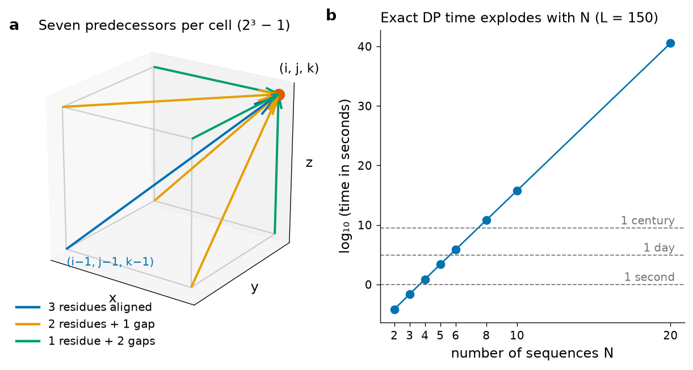
Try it yourself: an exact alignment of three globins
To make the exponential cost tangible, an exact three-dimensional DP was implemented in plain Python (BLOSUM62, linear gap −8) and applied to residues 2–41 of human HBB, HBA and MB (40 residues each, 413 = 68,921 cells). It ran in 0.66 s and returned the optimal SP score of 134 with this alignment:
The same three fragments aligned by the heuristic programs and re-scored with the same SP function gave 127 (Clustal Omega), 125 (MAFFT) and 128 (MUSCLE 5). The heuristics come close but do not reach the optimum. Note that the programs optimise their own objective functions (affine gaps, weights, probabilistic consistency), not this particular SP score, so the comparison shows the price of heuristics under one fixed criterion, not the "quality" of each program. Adding a fourth 40-residue sequence would multiply the cells by 41 and the predecessors from 7 to 15, raising the Python run time to roughly a minute; a fifth would require well over an hour.
The Carrillo–Lipman bound
Can the exact method be rescued? Carrillo and Lipman observed that most of the lattice is irrelevant [2]. Their argument uses the second form of the SP score. Suppose we already know (i) the score U of some reasonable MSA obtained with a fast heuristic, which is a lower bound of the optimum, and (ii) the optimal pairwise scores S*ij of every pair of sequences, which are upper bounds of what each induced pair can reach. For the optimal MSA, every induced pairwise alignment Aij must satisfy
The bound defines, in each two-dimensional projection of the lattice, a narrow band of cells through which an optimal path can pass; cells outside the band are never computed. The program MSA implemented this idea and made exact alignment practical for a handful of sequences of moderate length [3]. The band shrinks when the heuristic alignment is good and the sequences are similar, and widens for divergent sequences, so the method still does not scale to the dozens or thousands of sequences that biologists align today. The bound is nevertheless an important example of a general strategy in algorithm design: use a cheap approximate solution to prune the search space of an exact one.
Formal detail: why the bound holds
Let A* be the optimal MSA, so SP(A*) = Σk<l S(A*kl) ≥ U. For a fixed pair (i, j), isolate its term: S(A*ij) = SP(A*) − Σ(k,l)≠(i,j) S(A*kl) ≥ U − Σ(k,l)≠(i,j) S*kl, because each induced pairwise score is at most the optimal pairwise score. Adding and subtracting S*ij gives the inequality in the text. Computing, for every cell of the (i, j) projection, the best score of a pairwise path that passes through it (forward plus backward DP) then identifies the admissible band in O(L2) time per pair.
4.4.4 Heuristic algorithms I: progressive alignment
Because exact methods are impractical, every program in routine use is a heuristic: it finds a good, but not provably optimal, alignment in reasonable time. The oldest and still most influential family is progressive alignment, proposed in its classical form by Feng and Doolittle in 1987 [4] (with a closely related formulation by Hogeweg and Hesper [5]) and popularised by the Clustal programs [6],[7]. The idea is to build the MSA as a tree is climbed from the leaves to the root: the most similar sequences are aligned first, and more distant sequences or groups are added later. It proceeds in three steps (Figure 2).
- Distance matrix. All N(N−1)/2 pairs are aligned (ClustalW uses full dynamic programming or a fast k-tuple approximation) and each alignment is converted into a distance, for example 1 − fractional identity.
- Guide tree. A tree is built from the distances with a fast clustering method — UPGMA or neighbour-joining (Section 4.7). This tree is not meant to be a phylogeny; it only fixes the order in which sequences will be joined.
- Progressive profile alignment. Following the tree from the tips to the root, sequences are aligned to sequences, sequences to groups and groups to groups. A group of aligned sequences is treated as a profile: each column is a frequency distribution of residues, and two profiles are aligned by ordinary pairwise DP in which the score of matching column u with column v is the average substitution score over all residue pairs between them.
The cost is dominated by the N2 pairwise alignments, roughly O(N2L2), and the profile steps add O(NL2) — polynomial, and therefore applicable to hundreds of sequences on a laptop.
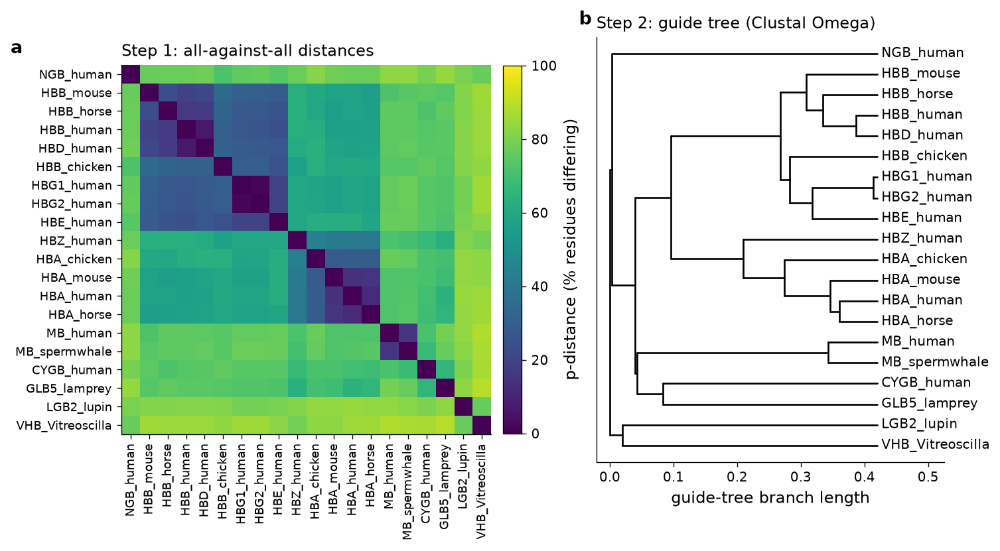
--guidetree-out), which fixes the order of the profile–profile joins. The guide tree groups the expected families but is not a reliable phylogeny: for example, it places neuroglobin at the base with branch lengths that are not substitution estimates. Distances computed in this study from the MAFFT L-INS-i alignment.Feng and Doolittle formulated a principle that characterises all progressive methods: "once a gap, always a gap". When two groups are aligned, the gaps already present inside each group are frozen; a later step can add new gap columns but can never remove or move the old ones. In their implementation gaps were replaced by a neutral symbol so that, when aligning groups, gaps are placed preferentially where gaps already exist, which keeps indels in variable loops rather than in conserved cores. The principle makes the method fast and stable, but it is also its fundamental weakness: errors made early are never corrected. If two sequences are misaligned at the first step because the local similarity was ambiguous, the mistake propagates to the final MSA, even if later sequences would have shown the correct placement.
ClustalW: the refinements that made progressive alignment work
ClustalW [7] added several heuristics that substantially improved accuracy and that you will meet again in other programs: (i) sequence weighting, derived from the guide-tree branch lengths, so that groups of near-identical sequences do not dominate the profile; (ii) substitution-matrix switching according to the divergence of the sequences being joined (a series of BLOSUM or PAM matrices); (iii) position-specific gap penalties — lower in hydrophilic stretches and at positions where gaps already exist, higher near existing gaps and within hydrophobic, probably buried segments; and (iv) delayed alignment of divergent sequences, which are added only after the reliable core has been built. Clustal W and its graphical version Clustal X were later rewritten in C++ as version 2.0 [8]. They remain historically important, but for new work the Clustal authors themselves recommend Clustal Omega (Section 4.4.7).
Pitfall: the guide tree is not a phylogeny
The guide tree printed by Clustal (.dnd file) is computed from rough distances, often with UPGMA, and only serves to order the joins. Never publish it as an evolutionary tree. A phylogeny must be computed from the finished alignment with an explicit model (Section 4.7).
4.4.5 Heuristic algorithms II: iterative refinement
Iterative methods attack the main weakness of progressive alignment — the impossibility of correcting early errors. They start from an initial MSA (usually progressive) and then repeatedly modify it, accepting a modification only if it improves an objective function such as the weighted SP score. The most common move is tree-dependent restricted partitioning: one branch of the guide tree is removed, which splits the sequences into two groups; the gap-only columns of each group are deleted; and the two groups are re-aligned as profiles. If the new MSA scores better it replaces the old one. Cycling over all branches, and repeating until no improvement is found, lets sequences "escape" from gaps that were frozen early.
- PRRP (Gotoh, 1996) introduced a doubly nested, randomised iterative strategy: an outer loop recomputes sequence weights and the tree from the current MSA, and an inner loop performs the partitioning–realignment cycles. Gotoh showed with structural reference alignments that the iteration significantly improved accuracy over purely progressive methods [9].
- MUSCLE (Edgar, 2004) made iteration fast [10]. Stage 1 computes distances from shared k-mers (short words), which avoids N2 full pairwise alignments, builds a UPGMA tree and aligns progressively. Stage 2 re-estimates distances from that first MSA (Kimura-corrected identity), builds a better tree and re-aligns only the parts of the tree that changed. Stage 3 refines by restricted partitioning. MUSCLE 5, the version used here, replaced this scheme by an HMM-based probabilistic consistency algorithm and can generate ensembles of alternative alignments by perturbing parameters and guide trees, which lets the user measure how much the downstream results depend on alignment uncertainty [11].
- MAFFT (Katoh and co-workers, 2002) accelerates the search for homologous segments with the fast Fourier transform (FFT): each sequence is converted into numerical vectors of amino-acid volume and polarity, and the correlation of two such vectors, computed by FFT, reveals the offsets at which the sequences share similar segments [12]. Its strategies have systematic names: FFT-NS-1 and FFT-NS-2 are progressive (NS-2 rebuilds the guide tree from the first alignment); FFT-NS-i adds iterative refinement (up to 1000 cycles); and L-INS-i, G-INS-i and E-INS-i add a consistency-type objective computed from all pairwise alignments (local, global or generalised), which makes them the most accurate options for up to a few hundred sequences [13],[14].
4.4.6 Heuristic algorithms III: consistency-based alignment
Consistency is a way of using the information of all sequences already when two of them are aligned. T-Coffee (Notredame, Higgins and Heringa, 2000) builds a library of pairwise alignments — global ones from ClustalW and local ones from Lalign — in which each aligned residue pair receives a weight equal to the percent identity of the alignment that produced it [15]. The library is then extended: the weight of pairing residue x of sequence A with residue y of sequence B is increased whenever, for some third sequence C, x is aligned with some residue z of C and z is aligned with y. Pairs supported by many intermediate sequences gain weight; pairs supported by only one direct comparison lose relative weight. Finally a progressive alignment is computed in which the "substitution score" of a residue pair is its extended library weight. The method is slower (the library has O(N2L2) entries in the worst case) but markedly more accurate on divergent families, and the same idea is used by MAFFT L-INS-i and by the probabilistic methods below.
Formal detail: the extended library weight
Let W(Ax, By) be the primary weight of aligning residue x of A with residue y of B (zero if the pair is absent from the library). The extended weight is W′(Ax, By) = W(Ax, By) + ΣC≠A,B Σz min{ W(Ax, Cz), W(Cz, By) }. The minimum expresses that a transitive path is only as reliable as its weakest link.
4.4.7 Heuristic algorithms IV: probabilistic (hidden Markov model) methods
Probabilistic methods replace the substitution-matrix score by a statistical model of how sequences evolve. Two kinds of models are used.
Pair hidden Markov models. A pair-HMM generates two sequences simultaneously through three states — match (emit a residue in both), insert in x, insert in y — with transition probabilities that play the role of gap penalties. Instead of a single best alignment, the forward–backward algorithm computes the posterior probability that residue xi is aligned with yj, summing over all possible alignments. ProbCons (Do and co-workers, 2005) computes these posteriors for every pair of sequences, applies a probabilistic consistency transformation analogous to the T-Coffee library extension, and finally builds the alignment that maximises the expected number of correctly aligned residue pairs (maximum expected accuracy) [16]. ProbCons was among the most accurate methods on structural benchmarks of its time, and MUSCLE 5 uses a closely related algorithm.
Profile hidden Markov models. A profile HMM (explained in detail in Section 4.5.9) is a statistical model of a whole family. Clustal Omega (Sievers and co-workers, 2011) uses them to make progressive alignment both scalable and accurate [17],[18]. It computes the guide tree with the mBed method, which represents each sequence by its k-tuple distances to a small set of seed sequences; this reduces the distance calculation from O(N2) to O(N log N) and allows hundreds of thousands of sequences to be aligned. Each profile in the progressive joins is converted into an HMM and the two HMMs are aligned with each other by the HHalign algorithm (HMM–HMM alignment), which is more sensitive than profile–profile alignment with a fixed substitution matrix. Clustal Omega can also use an external HMM of the family as a template ("external profile alignment").
Finally, when a trusted profile HMM of the family already exists — for example the Pfam model of the globin domain — new sequences can simply be aligned to the model one at a time with hmmalign from the HMMER package [19]. This is how Pfam builds its "full" alignments containing tens of thousands of sequences (Section 4.6.4): every sequence is aligned to the same model, so the alignment scales linearly with N, but insertions relative to the model (lower-case letters in the output) are not aligned with each other.
| Strategy | Representative programs | Key idea | Strength | Limitation |
|---|---|---|---|---|
| Progressive | Feng–Doolittle, ClustalW, MAFFT FFT-NS-2 | Guide tree; join profiles tip to root; once a gap, always a gap | Fast, simple, scalable | Early errors propagate |
| Iterative | PRRP, MUSCLE (v3), MAFFT FFT-NS-i | Re-partition and re-align until the objective stops improving | Corrects early errors | Can stop in local optima; slower |
| Consistency | T-Coffee, MAFFT L-INS-i | Library of pairwise alignments extended through third sequences | High accuracy on divergent sets | Time and memory grow with N2 |
| Probabilistic | ProbCons, MUSCLE 5, Clustal Omega, hmmalign | Pair-HMM posteriors or profile-HMM alignment | Accurate; measures of uncertainty; very large N (Clustal Omega, hmmalign) | Model assumptions; hmmalign does not align insertions |
4.4.8 Real data: aligning the globin family with three programs
To see how the strategies behave on real data, twenty reviewed globin sequences were downloaded from UniProtKB/Swiss-Prot. They were chosen to span the whole range of divergence: very close paralogues (HBG1/HBG2, HBB/HBD), orthologues in mammals and birds, the α-like and β-like haemoglobin chains, myoglobin, the more recently discovered neuroglobin [20] and cytoglobin, a jawless-vertebrate globin, a plant leghaemoglobin and a bacterial haemoglobin. Every accession was verified against the live database.
| Label | Accession | Entry name | Protein | Organism | Length (aa) |
|---|---|---|---|---|---|
| HBB_human | P68871 | HBB_HUMAN | Hemoglobin subunit beta | Homo sapiens | 147 |
| HBD_human | P02042 | HBD_HUMAN | Hemoglobin subunit delta | Homo sapiens | 147 |
| HBG1_human | P69891 | HBG1_HUMAN | Hemoglobin subunit gamma-1 | Homo sapiens | 147 |
| HBG2_human | P69892 | HBG2_HUMAN | Hemoglobin subunit gamma-2 | Homo sapiens | 147 |
| HBE_human | P02100 | HBE_HUMAN | Hemoglobin subunit epsilon | Homo sapiens | 147 |
| HBB_mouse | P02088 | HBB1_MOUSE | Hemoglobin subunit beta-1 | Mus musculus | 147 |
| HBB_horse | P02062 | HBB_HORSE | Hemoglobin subunit beta | Equus caballus | 146 |
| HBB_chicken | P02112 | HBB_CHICK | Hemoglobin subunit beta | Gallus gallus | 147 |
| HBA_human | P69905 | HBA_HUMAN | Hemoglobin subunit alpha | Homo sapiens | 142 |
| HBZ_human | P02008 | HBAZ_HUMAN | Hemoglobin subunit zeta | Homo sapiens | 142 |
| HBA_mouse | P01942 | HBA_MOUSE | Hemoglobin subunit alpha | Mus musculus | 142 |
| HBA_horse | P01958 | HBA_HORSE | Hemoglobin subunit alpha | Equus caballus | 142 |
| HBA_chicken | P01994 | HBA_CHICK | Hemoglobin subunit alpha-A | Gallus gallus | 142 |
| MB_human | P02144 | MYG_HUMAN | Myoglobin | Homo sapiens | 154 |
| MB_spermwhale | P02185 | MYG_PHYMC | Myoglobin | Physeter macrocephalus | 154 |
| NGB_human | Q9NPG2 | NGB_HUMAN | Neuroglobin | Homo sapiens | 151 |
| CYGB_human | Q8WWM9 | CYGB_HUMAN | Cytoglobin | Homo sapiens | 190 |
| GLB5_lamprey | P02208 | GLB5_PETMA | Globin-5 | Petromyzon marinus | 150 |
| LGB2_lupin | P02240 | LGB2_LUPLU | Leghemoglobin-2 | Lupinus luteus | 154 |
| VHB_Vitreoscilla | P04252 | BAHG_VITST | Bacterial hemoglobin | Vitreoscilla stercoraria | 146 |
The FASTA file was aligned with five configurations: MAFFT FFT-NS-2 (progressive), MAFFT FFT-NS-i (iterative), MAFFT L-INS-i (consistency plus iteration), MUSCLE 5 (probabilistic consistency) and Clustal Omega (HMM–HMM progressive). Each alignment was then scored with the same affine SP function (BLOSUM62, gap opening −10, extension −1). To measure how much the programs agree, two benchmark statistics introduced with the BAliBASE reference set [21] were computed for every pair of alignments, treating one as "reference" (row) and the other as "test" (column): the sum-of-pairs score (SPS), the fraction of aligned residue pairs of the reference that are also aligned in the test, and the total column score (TC), the fraction of reference columns reproduced exactly.
| Program and mode | Strategy | Columns | SP score | Gap-free columns | Invariant columns |
|---|---|---|---|---|---|
| MAFFT FFT-NS-2 | progressive | 201 | 37,608 | 105 | 3 |
| MAFFT FFT-NS-i | progressive + iterative | 198 | 38,552 | 116 | 3 |
| MAFFT L-INS-i | consistency + iterative | 201 | 39,193 | 122 | 3 |
| MUSCLE 5 (align) | probabilistic consistency | 219 | 38,587 | 121 | 3 |
| Clustal Omega | HMM–HMM progressive | 193 | 37,789 | 116 | 3 |
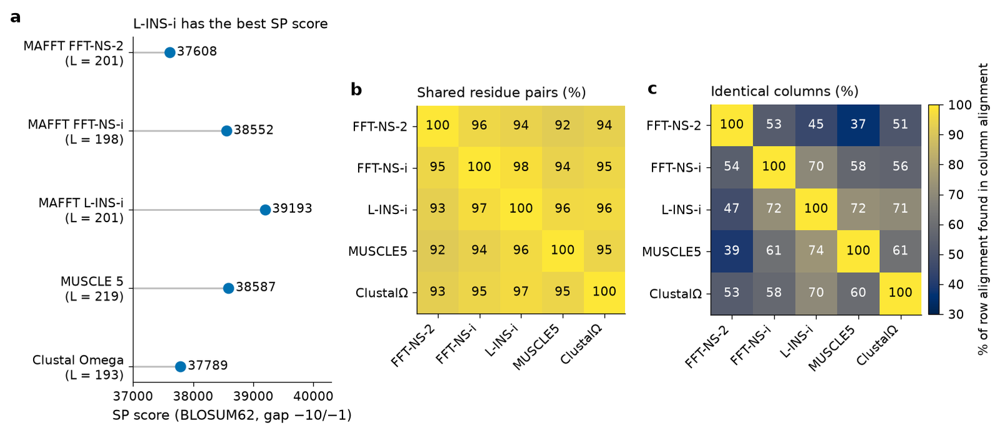
Three observations deserve attention (Figure 3 and the table above). First, the refinement steps pay off under the SP criterion: MAFFT's purely progressive FFT-NS-2 scores 37,608, iterative FFT-NS-i 38,552 and L-INS-i 39,193, the highest of all. Second, the programs agree on 92–98 % of the aligned residue pairs but on only 37–74 % of complete columns: a single residue placed differently in one of twenty sequences is enough to make a column "different". Disagreement concentrates in the N- and C-terminal extensions, in the loop between helices C and E (where the α chains lack the D helix) and in the most divergent sequences: of the residue pairs that the L-INS-i alignment assigns to the haemoglobin chains, about 97 % are reproduced by the other four alignments, but only 89 % for the lupin leghaemoglobin and 80 % for the Vitreoscilla haemoglobin. Third, the core is robust: all five alignments contain exactly the same three invariant columns — Pro C2, Phe CD1 and His F8 (positions 37, 43 and 93 in UniProt numbering of P68871; Pro36, Phe42 and His92 in the classical numbering of the mature chain, which omits the initiator methionine). In the column of the distal histidine (E7, His64 in UniProt numbering, His63 mature), 19 of the 20 sequences carry histidine in all alignments; FFT-NS-i, L-INS-i and MUSCLE 5 align a glutamine of the Vitreoscilla protein in that column, whereas FFT-NS-2 and Clustal Omega leave a gap there.
Pitfall: "the highest score" is not "the true alignment"
We do not know the true alignment of these sequences. A better SP score means a better solution of the SP optimisation problem, not necessarily a more correct homology statement. The only external standard is a structure-based reference alignment (as in BAliBASE), because structures diverge more slowly than sequences. In practice: for fewer than about 200 sequences use an accurate mode (MAFFT L-INS-i, MUSCLE 5, T-Coffee); for thousands use Clustal Omega or MAFFT FFT-NS-2; and always inspect the result by eye.
Try it yourself: align five globins in Colab
The script downloads five globins from UniProt, aligns them with Clustal Omega and prints 50 columns around the F helix with the Clustal conservation line (* identical, : strongly similar, . weakly similar). In Colab, first run !pip install biopython and !apt-get install -y clustalo.
import subprocess, requests
from Bio import AlignIO
accs = ["P68871", "P69905", "P02144", "Q9NPG2", "P02240"] # HBB, HBA, MB, NGB, lupin Lb
fasta = "".join(requests.get(f"https://rest.uniprot.org/uniprotkb/{a}.fasta").text for a in accs)
open("five.fa", "w").write(fasta)
subprocess.run("clustalo -i five.fa -o five_clo.aln --outfmt=clu --force", shell=True, check=True)
aln = AlignIO.read("five_clo.aln", "clustal")
print(aln.get_alignment_length(), "columns,", len(aln), "sequences")
for rec in aln:
print(f"{rec.id.split('|')[2]:12s} {str(rec.seq[80:130])}")
print(f"{'':12s} {aln.column_annotations['clustal_consensus'][80:130]}")Read the output critically. The single asterisk in this window marks a leucine (Leu88 of the mature β chain, Leu89 in UniProt numbering of P68871) that is identical in all five proteins. Now look for the proximal histidine, the H of SELH in the HBB row: Clustal Omega aligned it in HBB, HBA and MB, but put a glycine of neuroglobin and of the lupin leghaemoglobin in that column and placed their own histidines three columns to the right, opposite the two-gap block of the haemoglobins. With only five divergent sequences the progressive joins had too little information. Replace the Clustal Omega command by mafft --localpair --maxiterate 1000 five.fa > five_maf.fa (MAFFT L-INS-i): in that alignment, run for this unit, all five histidines fall in the same column. In the 20-sequence alignments of this section, where the intermediate sequences guide the joins, both programs align the proximal histidine of all globins correctly.
4.4.9 Editing and visualising alignments with Jalview
No alignment program is perfect, and an experienced analyst always looks at the alignment before using it. Jalview is a free, open-source alignment editor and analysis workbench written in Java, developed at the University of Dundee [22]. It runs as a desktop application (download from jalview.org) and as a web version (JalviewJS). The following protocol, done with the twenty-globin alignment, covers the operations you are expected to master.
- Load the alignment. File → Input Alignment → From File (or From URL, or paste with From Textbox). Jalview recognises FASTA, Clustal, MSF, PIR, Stockholm and other formats automatically. Alternatively load unaligned sequences and align them inside Jalview through the Web Service → Alignment menu (Clustal Omega, MAFFT, MUSCLE and others, run on remote servers when the service is available).
- Colour by residue properties. The Colour menu offers schemes with different meanings. ClustalX colours a residue only when its column satisfies a conservation criterion for its physico-chemical class (for example blue for hydrophobic, red for positive, magenta for negative, green for polar, orange for glycine, yellow for proline, cyan for aromatic), so the conserved core lights up while variable loops stay white. BLOSUM62 colours each residue by how well it scores against the column consensus (dark blue when identical to the consensus, light blue when positive). Hydrophobicity uses the Kyte–Doolittle scale from red (hydrophobic) to blue (hydrophilic) and is excellent for spotting amphipathic helices — in globins you will see the periodicity of buried and exposed faces. Percentage identity shades by agreement with the consensus. Colour → By Conservation and Above Identity Threshold add a slider that hides colour in weakly conserved columns.
- Read the annotation rows. Below the sequences Jalview computes three rows by default. Conservation scores each column from 0 to 10 by the number of physico-chemical properties shared by all residues (an asterisk for full identity, a plus sign when all properties are conserved). Quality is based on the BLOSUM62 scores of the observed substitutions — high when substitutions are conservative. Consensus shows the most frequent residue and its percentage (with a logo display available from the row's context menu). In the globin alignment the Conservation row reaches its maximum at the Pro C2, Phe CD1 and His F8 columns.
- Edit gaps. Select a sequence (click its name) or a block (drag in the alignment). With the mouse, holding Shift while dragging a residue left or right inserts or removes gaps in that sequence; holding Ctrl (Cmd on macOS) drags the whole selected group. The keyboard edit mode (toggled with F2) moves a cursor with which gaps are inserted with the space bar and deleted with backspace. Use Edit → Undo freely. Typical manual corrections are moving an isolated residue out of a conserved column, or merging two half-filled gap columns.
- Realign a region. Select a block of columns that looks wrong and send only that region to an aligner from the Web Service menu; Jalview re-inserts the realigned block. Edit → Remove Empty Columns deletes columns that contain only gaps.
- Trees and principal components. Calculate → Calculate Tree or PCA builds a neighbour-joining or average-distance (UPGMA) tree from BLOSUM62 or percent-identity distances; the tree window is linked to the alignment, so clicking a node selects the corresponding sequences, and the tree can be used to sort the alignment (Calculate → Sort → By Tree Order). Remember that such quick trees are exploratory, not publication-quality phylogenies.
- Export. File → Save As writes the edited alignment in any supported format (FASTA for further analysis, Stockholm to keep annotation). File → Export Image produces PNG, EPS or SVG images of the coloured alignment, and File → Export → HTML an interactive web page. Always state in the figure legend which colour scheme and thresholds were used.
4.4.10 Publication figures with BoxShade and ESPript
BoxShade, written by Kay Hofmann and Michael D. Baron, is a program for pretty-printing multiple alignments; it does not align anything itself but shades an alignment produced by another program. Its logic is simple and worth understanding, because it is reproduced by many other tools. For each column, BoxShade asks whether a single residue type is present in at least a user-defined fraction of the sequences (the threshold, typically 0.5). If so, the residues identical to it receive the "identical" shading (classically white letters on black) and residues that are similar to it according to a table of similar pairs receive the "similar" shading (black on grey). If no single residue reaches the threshold, BoxShade looks for a group of mutually similar residues (for example I, L, V, M) that does, and shades them as similar. Columns that pass neither test are left unshaded. Shading can alternatively be computed relative to a chosen master sequence, and a consensus line can be printed with symbols for identical and similar columns. The program writes PostScript/EPS, RTF, HTML, PICT, ASCII and several other formats; it is available as a Debian/Ubuntu package (boxshade) and through public web servers.
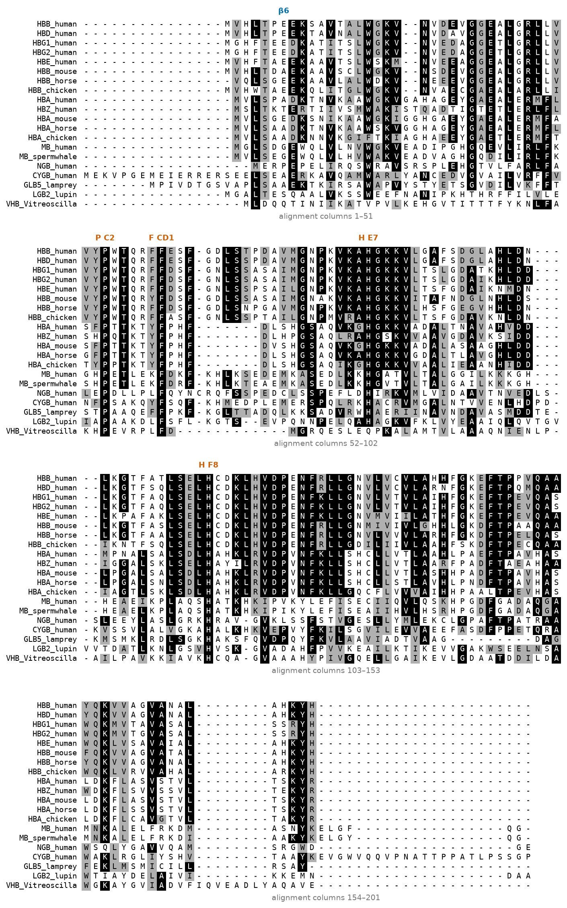
ESPript ("Easy Sequencing in PostScript"), with its companion ENDscript, is the most widely used web server for publication-quality alignment figures [23]. Beyond BoxShade-like similarity colouring (red boxes for identity, red letters in yellow-framed boxes for similarity, computed with a chosen similarity matrix and threshold), ESPript can read a PDB structure of one of the aligned proteins and draw its secondary-structure elements above the alignment — helices as coils and strands as arrows — together with solvent accessibility, hydropathy and user-defined markers for catalytic or binding residues. For a globin alignment this places the eight helices A–H directly over the sequence blocks, which makes the structural logic of conservation visible at a glance (Unit 5 returns to these structures).
Clinical connection: from an alignment column to a diagnosis
When a patient's sequencing report lists a missense variant of unknown significance, one of the first checks performed by clinical geneticists is to look at the corresponding column of a multiple alignment of orthologues. A substitution at a column that is invariant from fish to humans is evidence (not proof) of pathogenicity; a substitution that already occurs in other healthy species is evidence against. Variant-effect predictors such as SIFT and PolyPhen-2 automate exactly this reasoning, and their output is only as good as the MSA they compute. The β6 column illustrates the limits: Glu6 is conserved in all eight β-like chains of Figure 4 but not across the globin family (where Ala, Thr, Gly, Pro, Ser and Gln also occur at that aligned position), so family-wide conservation alone would not have predicted that Glu6Val causes sickle-cell disease. The disease mechanism — a hydrophobic patch on the surface of deoxygenated haemoglobin that drives polymerisation — is a property of the haemoglobin tetramer, not of the fold.
Key ideas of Section 4.4
- An MSA is a consistent hypothesis of positional homology for three or more sequences; it reveals conservation, enables profile methods and phylogenetics, and bridges remote homologues.
- The sum-of-pairs score adds the scores of all induced pairwise alignments; sequence weighting compensates for over-represented subfamilies.
- Exact multidimensional DP costs O(LN·2N) time and the SP problem is NP-hard; the Carrillo–Lipman bound prunes the lattice but only rescues small problems.
- Progressive methods (guide tree + profile joins) are fast but freeze early errors ("once a gap, always a gap"); iterative refinement, consistency libraries and probabilistic HMM methods each attack this weakness.
- On the globins, five configurations agreed on 92–98 % of residue pairs but only 37–74 % of columns; all preserved the invariant Pro C2, Phe CD1 and His F8.
- Always inspect and, if necessary, edit an alignment (Jalview), and present it with explicit shading rules (BoxShade, ESPript).
Section 4.5Analysis of multiple alignments: conserved local motifs
Curriculum: «Análisis de los AMS. Motivos locales conservados: motivos, patrones, reglas, huellas dactilares, bloques, perfiles, modelos de Markov ocultos.» — Analysis of MSAs. Conserved local motifs: motifs, patterns, rules, fingerprints, blocks, profiles, hidden Markov models.
Once an alignment exists, the next question is what it tells us. This section first quantifies conservation column by column, and then climbs a ladder of increasingly powerful ways of describing a family so that new members can be recognised: from a single regular expression (a pattern) to a full probabilistic model (a profile hidden Markov model). Each rung of the ladder corresponds to one of the secondary databases of Section 4.6.
4.5.1 Conserved columns, entropy and consensus
The simplest description of a column is its residue frequency distribution: pa, the fraction of sequences carrying amino acid a. A column in which one residue has p = 1 is invariant; a column in which all twenty residues occur equally often carries no information about the family. Information theory provides a single number between these extremes, the Shannon entropy:
Entropy is computed only for columns with enough residues; here we used columns with at most 50 % gaps. In the twenty-globin alignment (201 columns), 149 columns satisfy this condition; their mean entropy is 1.77 bits, 20 columns have H < 1 bit and 21 have H > 2.5 bits. Only three columns have H = 0 (Figure 5). The highest entropy, 3.30 bits, occurs in the G-helix column of β-globin Cys112, which contains twelve different residues among the twenty sequences.
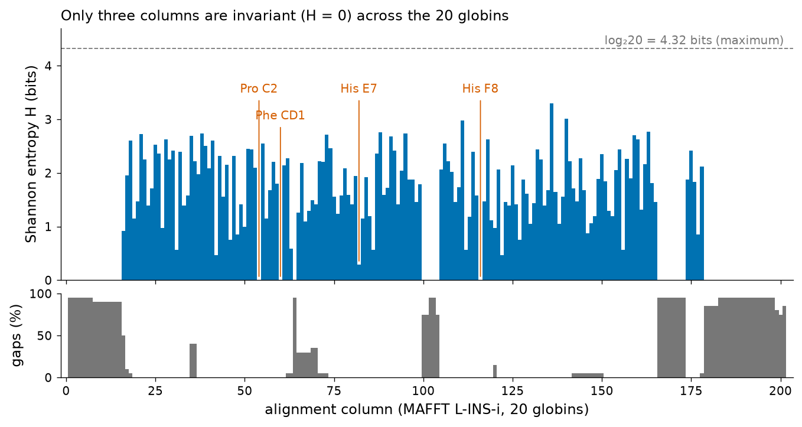
The invariant columns make structural sense. The proximal histidine F8 is the residue whose side chain binds the haem iron from below — without it the haem cannot be held. Phe CD1 packs against the haem ring in the distal pocket. Pro C2 caps the C helix. These three positions are a good example of a general rule: the most conserved positions of a family are those required for its fold or its chemistry, and they are the first places to look when interpreting a mutation or designing an experiment.
A consensus sequence summarises the alignment by writing, for each column, its most frequent residue — usually only if it exceeds a threshold, with x otherwise. At a 50 % threshold the globin consensus has a defined residue in 74 of 201 columns. Consensus sequences are easy to read and to search, but they discard information: a column with 55 % Leu and 45 % Ile becomes "L", exactly like a column with 100 % Leu. All the more sophisticated descriptors below try to keep this lost information.
Pitfall: conservation depends on the sample
Entropy and consensus describe the sequences you chose, not "the protein". The β6 column of the globin alignment is invariant (Glu) among the eight β-like chains but has H = 2.25 bits across all twenty globins. Adding many near-identical sequences lowers the entropy of every column without adding information; conversely, a single misaligned or fragmentary sequence can destroy an invariant column. Always weight redundant sequences and remove fragments before interpreting conservation.
4.5.2 Sequence logos
A sequence logo, introduced by Schneider and Stephens [24], displays both the conservation of each column and the residues responsible for it. For each column, a stack of letters is drawn whose total height is the information content R of the column, and within the stack each letter's height is proportional to its frequency:
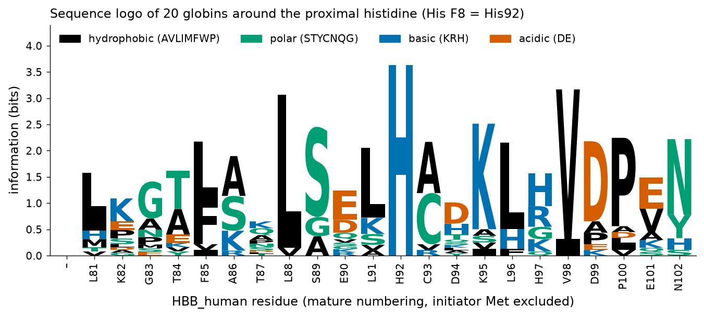
Read Figure 6 from left to right. The invariant His92 column reaches the maximum of 3.64 bits. Leu88 (3.07 bits) and Val98 (3.17 bits, in the FG corner) are almost invariant hydrophobic positions that pack against the haem or the protein core. Other positions are conserved only partially and show mixed stacks: Leu91 (leucine in most sequences, but Lys, Ser, Ala or Val in others) and Leu96 (Leu, His or Phe). In contrast, Lys82, Glu90 and Asp94 point towards the solvent and tolerate eight or nine different residues each. Along a helix, buried and exposed positions alternate every three to four residues (an amphipathic α-helix), and the logo shows tall stacks at buried positions interleaved with short stacks at exposed ones — information that the consensus sequence alone does not convey.
4.5.3 Motifs and domains
Two words are used constantly and must not be confused. A motif is a short, conserved stretch of sequence — typically 5 to 30 residues — associated with a particular function or structural feature: a metal-binding site, a catalytic site, a modification site, a turn. Motifs do not fold independently. A domain is a larger unit, typically 50 to 300 residues, that folds into a stable three-dimensional structure on its own, often has a function of its own, and is found combined with different partners in different proteins. The globin fold (about 140–150 residues, eight helices A–H) is a domain; the cluster of residues that surround the haem iron is a set of motifs within it. A C2H2 zinc finger (about 30 residues) lies at the border: it folds only around its zinc ion, and is described by PROSITE both as a short pattern (PS00028) and as a profile (PS50157).
The distinction matters because each descriptor of the following subsections is adapted to one scale. Patterns and rules describe single motifs; fingerprints and blocks describe sets of motifs; profiles and HMMs describe whole domains, including their insertions and deletions.
4.5.4 Patterns: regular expressions for motifs
A pattern (also called a signature) is a regular expression that describes which residues are allowed at each position of a motif. It is a deterministic, qualitative description: a sequence either matches or does not. PROSITE, created by Amos Bairoch at the end of the 1980s, defined the standard syntax [26],[27]:
| Element | Meaning | Example |
|---|---|---|
| A, C, D … | The residue itself (IUPAC one-letter code) | C = cysteine |
x | Any residue | x |
[ ] | Any one of the residues listed | [ST] = Ser or Thr |
{ } | Any residue except those listed | {P} = not Pro |
- | Separates consecutive elements | N-{P}-[ST] |
(n), (n,m) | Repetition exactly n times, or between n and m times | x(3), x(2,4) |
<, > | Anchored at the N- or C-terminus | <M, [ST]-x-x> |
. | Ends the pattern |
The C2H2 zinc-finger signature PS00028 reads C-x(2,4)-C-x(3)-[LIVMFYWC]-x(8)-H-x(3,5)-H.: a cysteine, two to four arbitrary residues, a second cysteine, three residues, a hydrophobic residue, eight residues, a histidine, three to five residues and a second histidine. The two cysteines and the two histidines are the zinc ligands; the hydrophobic residue is part of the small hydrophobic core of the finger. Translating PROSITE syntax into the regular expressions of a programming language is mechanical, and writing such a translator is an excellent exercise.
Try it yourself: a PROSITE pattern matcher
The function translates any PROSITE pattern into a Python regular expression; the look-ahead construction (?=( … )) reports overlapping matches, as ScanProsite does. The script then scans the transcription factor Sp1 (UniProt P08047) and human β-globin.
import re, requests
def prosite_to_regex(pattern):
"""Translate PROSITE pattern syntax into a Python regular expression."""
out = []
for el in pattern.rstrip(".").split("-"):
m = re.match(r"^(<?)(.+?)(>?)(?:\((\d+)(?:,(\d+))?\))?$", el)
start, core, end, n1, n2 = m.groups()
if core == "x": body = "."
elif core.startswith("{"): body = "[^" + core[1:-1] + "]"
else: body = core # single residue or [..]
rep = "" if not n1 else ("{%s}" % n1 if not n2 else "{%s,%s}" % (n1, n2))
out.append(("^" if start else "") + body + rep + ("$" if end else ""))
return "".join(out)
pa = "C-x(2,4)-C-x(3)-[LIVMFYWC]-x(8)-H-x(3,5)-H." # PS00028
rx = prosite_to_regex(pa); print("regex:", rx)
seq = "".join(requests.get("https://rest.uniprot.org/uniprotkb/P08047.fasta").text.split("\n")[1:])
for m in re.finditer("(?=(%s))" % rx, seq):
print("SP1 match at", m.start() + 1, m.group(1))
hbb = "".join(requests.get("https://rest.uniprot.org/uniprotkb/P68871.fasta").text.split("\n")[1:])
print("HBB matches:", len(re.findall(rx, hbb)))Sp1 contains three consecutive C2H2 zinc fingers, which bind GC-rich promoter DNA; the matcher finds all three (Figure 7a dissects the first). Haemoglobin, correctly, has none.
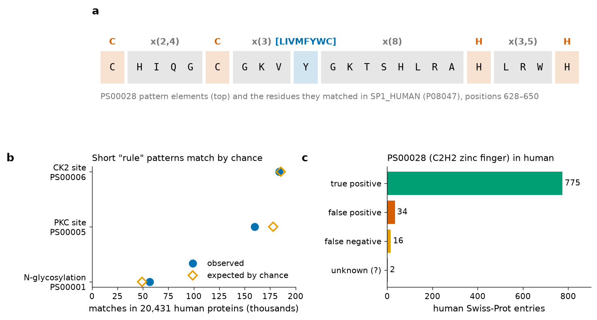
How good is a pattern? Because a pattern either matches or does not, its performance is measured like that of a diagnostic test (U4A introduced these terms for BLAST). PROSITE curators examine every UniProtKB/Swiss-Prot entry matched or missed by a pattern and classify it as a true positive (a real member of the family), a false positive (a match in an unrelated protein) or a false negative (a real member that the pattern misses). For PS00028 in Swiss-Prot release 2026_03 (575,748 entries) the numbers are 13,585 true-positive hits in 2,210 sequences, 318 false-positive hits in 246 sequences and 124 false-negative sequences, giving a precision of 97.71 % and a recall of 99.10 %. Restricted to human proteins (Figure 7c), our scan found 811 matching entries: 775 curated true positives, 34 false positives (for example the receptor LGR4 and the protease PCSK6, whose cysteine and histidine spacing happens to fit) and two of uncertain status, while 16 real zinc-finger proteins are missed. One curated true positive (ZN487_HUMAN, B1APH4) did not match in our scan: its current sequence version no longer contains the motif, a reminder that database annotations and sequences evolve between releases.
4.5.5 Rules: very short patterns for sites
Some PROSITE entries describe post-translational modification sites recognised by enzymes that act on short linear motifs. Classical examples are N-glycosylation (PS00001, N-{P}-[ST]-{P}), protein kinase C phosphorylation (PS00005, [ST]-x-[RK]) and casein kinase II phosphorylation (PS00006, [ST]-x(2)-[DE]). These patterns are so short that they occur by chance in almost every protein, and PROSITE marks them with the flag CC /SKIP-FLAG=TRUE, meaning that they are skipped by default in scans and that they carry no curated statistics. Figure 7b quantifies the problem: in the human proteome the N-glycosylation pattern matches 56,686 times in 15,134 of 20,431 proteins (74 %), close to the 49,305 matches expected by chance; the PKC and CK2 patterns match 95.8 % and 94.5 % of all human proteins. Human β-globin, a cytosolic protein that is neither glycosylated nor a known kinase substrate in vivo, contains one PKC match (TQR at residues 39–41, UniProt numbering) and four CK2 matches. A rule match is therefore a necessary condition, not evidence: an N-glycosylation sequon can only be used if the protein enters the secretory pathway and the asparagine is accessible.
The word "rule" has a second, more modern meaning in PROSITE: ProRules (PR lines in the records, for example PRU00238 for the globin domain) are annotation rules that specify which positions of a domain detected by a profile are functional sites — for instance, which histidine binds the haem iron — and under which conditions UniProt may annotate them automatically.
Clinical connection: glycosylation sequons in therapeutic antibodies and viral proteins
The N-glycosylation sequon N-x-S/T (x ≠ Pro) is one of the few short rules with direct biomedical consequences. Therapeutic monoclonal antibodies carry a conserved sequon at Asn297 of the heavy-chain constant region, and the attached glycan modulates their effector functions; manufacturers monitor it as a critical quality attribute. In viruses, the gain or loss of sequons on surface glycoproteins (the haemagglutinin of influenza, the envelope of HIV, the spike of SARS-CoV-2) creates "glycan shields" that hide epitopes from antibodies, and changes in sequon number are followed in surveillance alignments. In both cases the pattern is only a starting point: whether the site is actually glycosylated must be shown experimentally, for example by mass spectrometry.
4.5.6 Fingerprints: groups of conserved motifs
A single pattern describes a single motif, and a family often has several. Moreover, a pattern is all-or-nothing: one unusual residue in a true member makes it a false negative. Fingerprints, developed by Terri Attwood and colleagues for the PRINTS database [28],[29], address both problems. A fingerprint is a group of conserved motifs excised from an alignment, typically three to ten ungapped segments that, in the family's structure, often correspond to secondary-structure elements or to the walls of a binding site. Each motif is stored as an ungapped alignment of the residues observed at that position in the family members, not as a regular expression, so it captures the frequencies rather than a yes/no rule.
A fingerprint is built and refined iteratively. The initial motifs, taken from a small seed alignment, are converted into frequency matrices and used to scan UniProtKB; sequences that match all the motifs in the correct order and with plausible spacing are added to the motif alignments; the matrices are rebuilt; and the scan is repeated until no new true members appear. Diagnosis then has a natural graded interpretation: a sequence that matches all motifs in order is a confident member; one that matches only some is a partial match that may be a divergent member or a fragment. In addition, PRINTS uses the hierarchy of fingerprints: a "superfamily" fingerprint shared by all members can be combined with more specific fingerprints that distinguish subfamilies — for the globins, separate fingerprints exist for α-haemoglobins (PR00612, ALPHAHAEM), β-haemoglobins (PR00814, BETAHAEM), myoglobins (PR00613, MYOGLOBIN) and plant globins (PR00188), among others, all verified in InterPro for this unit.
Human β-globin illustrates the approach. According to the InterPro match data for P68871, the BETAHAEM fingerprint matches it with five motifs at residues 30–46, 48–63, 72–89, 94–99 and 128–144 (UniProt numbering; Figure 11 in Section 4.6). The motifs are spread across the whole domain, which is why a fingerprint can tell a β-chain from an α-chain even though both contain the same invariant haem-pocket residues: discrimination comes from many moderately conserved positions combined, not from a few invariant ones.
4.5.7 Blocks: ungapped segments and the origin of BLOSUM
A block is an ungapped, multiply aligned segment corresponding to one of the most conserved regions of a protein family. Steven and Jorja Henikoff assembled blocks automatically from the families documented in PROSITE: their PROTOMAT procedure searched each family for short spaced motifs, extended them into the longest ungapped segments shared by the members, and selected the best set of non-overlapping blocks in the correct order [30]. The resulting BLOCKS database was searched with position-specific matrices derived from each block. A block is therefore halfway between a fingerprint motif and a profile: like a motif it is ungapped and local; like a profile it is scored with a matrix.
The lasting importance of blocks is that they provided the data for the BLOSUM substitution matrices that you used in U4A [31]. Because blocks contain only reliably aligned, ungapped columns from many families, counting the residue pairs in their columns gives unbiased estimates of which substitutions occur between homologous positions. Sequences within a block were clustered above a percent-identity threshold (62 % for BLOSUM62) and each cluster counted as a single sequence, to prevent close relatives from dominating the counts. The 15-column block used in Section 4.5.8 below — the F helix of the globins, the longest gap-free stretch containing His F8 in our alignment — is a block in exactly this sense.
4.5.8 Profiles: position-specific scoring matrices
A profile converts the columns of an alignment into scores. In its simplest form, the position-specific scoring matrix (PSSM), there is one column of twenty scores for each position of an ungapped block, and the score of residue a at position j is a log-odds ratio:
Pseudocounts are essential. Without them, a residue never observed in the N sequences gets f = 0 and a score of −∞, so a single unseen but perfectly acceptable substitution would exclude a true member. Adding a small, background-proportional count gives every residue a finite, negative score, whose magnitude shrinks as N grows. More refined schemes distribute the pseudocounts according to substitution probabilities (an unseen Ile in a column of Leu and Val receives more than an unseen Asp) or use mixtures of Dirichlet distributions estimated from many families. Sequences should also be weighted, for example with the position-based weights of Henikoff and Henikoff [32], so that the eight β-like chains of our alignment do not count eight times more than the single plant globin.
A sequence is scored against a PSSM by sliding a window along it and adding the scores of its residues at each offset; the best window score is reported. Gribskov, McLachlan and Eisenberg generalised this to gapped profiles with position-specific gap penalties and showed that profile searches detect distant relatives missed by pairwise searches [33]; PSI-BLAST builds a PSSM automatically from its own hits and iterates (U4A) [34]; and the PROSITE profiles such as PS01033 are generalised profiles of this kind (Section 4.6.2).
Try it yourself: build and use a PSSM
A toy five-sequence block (uniform background, β = √5) shows how pseudocounts produce finite negative scores and how a window is scored.
import math
block = ["LSELH", "LSELH", "LSDLH", "LAQSH", "LKNLH"] # 5 ungapped rows (toy block)
aa = "ACDEFGHIKLMNPQRSTVWY"
q = {a: 1/20 for a in aa} # uniform background for clarity
N, beta = len(block), math.sqrt(len(block)) # pseudocount weight = sqrt(N)
pssm = []
for j in range(len(block[0])):
col = [s[j] for s in block]
pssm.append({a: math.log2(((col.count(a) + beta*q[a]) / (N + beta)) / q[a]) for a in aa})
for a in "LSEHK":
print(a, " ".join(f"{pssm[j][a]:5.2f}" for j in range(5)))
score = lambda w: sum(pssm[j][c] for j, c in enumerate(w))
for w in ["LSELH", "LSDLH", "GAVKD"]:
print(w, round(score(w), 2))The unseen residue K in column 1 scores −1.69 rather than −∞; the block member LSDLH scores almost as high as the consensus-like LSELH, and an unrelated word scores negatively.
A PSSM of the real F-helix block (15 columns, 20 globins, β = √20, human background) was built in the same way and used to score every protein of the human proteome (Figure 8). The result is instructive. The haemoglobin chains rank at the very top (γ1, γ2, δ, β, ε, α and ζ chains at 43.4 to 30.8 bits, myoglobin at 23.1 bits), well above the 99th percentile of the proteome (10.7 bits). But the more divergent globins are not separated from noise: haemoglobin μ ranks 9th (21.6 bits), only just above two zinc-finger proteins (21.0 bits), neuroglobin ranks 22nd, haemoglobin θ1 29th and cytoglobin 66th, behind 54 unrelated proteins. Two limitations explain this: the profile is too short (15 residues carry little information compared with a 150-residue domain) and the unweighted counts make it a model of haemoglobins rather than of globins in general.
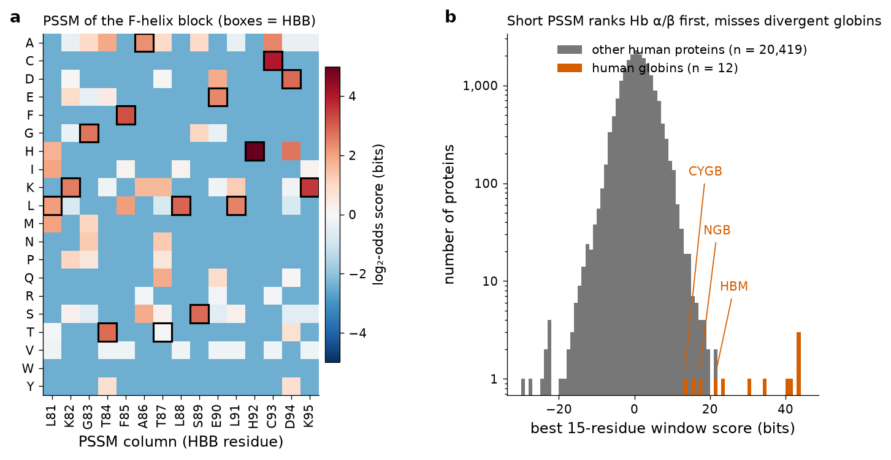
4.5.9 Profile hidden Markov models
A profile hidden Markov model (profile HMM) is the probabilistic generalisation of a gapped profile [35],[36],[37]. It is a chain of states, one group per consensus position of the family, connected by transitions (Figure 9a). Each position k has three states:
- a match state Mk, which emits one residue with position-specific probabilities eMk(a) — the equivalent of a PSSM column;
- an insert state Ik, which emits residues between consensus positions k and k+1, usually with background probabilities, and can loop on itself to model insertions of any length;
- a delete state Dk, which is silent (emits nothing) and allows a sequence to skip consensus position k.
Transitions between states have probabilities too: M→M (continue matching), M→I (open an insertion), I→I (extend it), M→D (open a deletion), D→D (extend it), and the return transitions I→M and D→M. These probabilities are estimated from the alignment — a position where many sequences have gaps gets a high M→D probability, which means a position-specific gap penalty, something a substitution matrix cannot express. "Hidden" refers to the fact that, when we observe a sequence, we do not see which state emitted each residue; the path through the model is the hidden alignment.
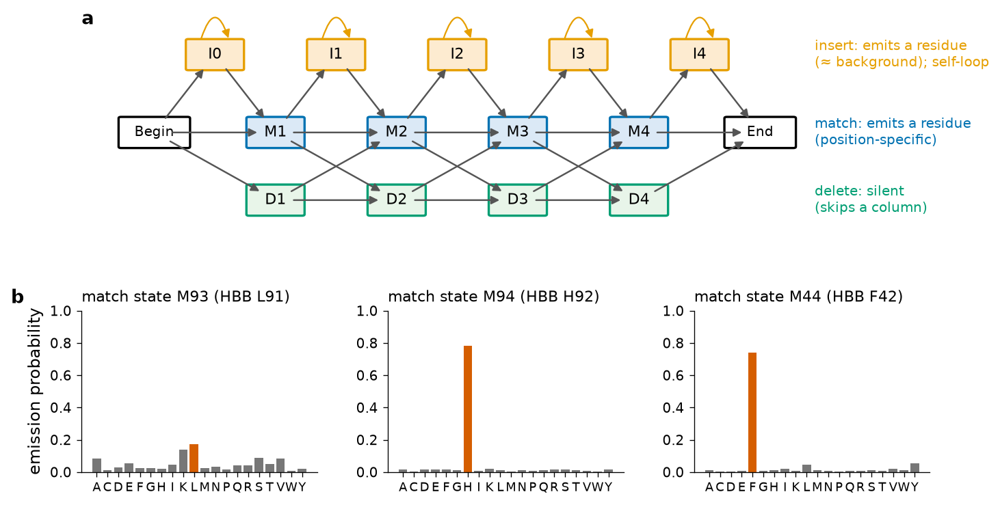
hmmbuild from the 20-globin alignment: the state aligned to β-globin Leu91 has a broad distribution (maximum 0.17), whereas those aligned to His92 (F8) and Phe42 (CD1) emit their residue with probabilities 0.78 and 0.74. HMMER's entropy weighting (effective number of sequences 2.0) deliberately keeps the model from over-fitting twenty sequences, so even invariant columns do not reach probability 1.Scoring a sequence: Viterbi and Forward
Given a model and a sequence, two dynamic-programming algorithms — the same kind of recurrences as Needleman–Wunsch, but over states and probabilities — answer two different questions. The Viterbi algorithm finds the single most probable path of the sequence through the model, which is the alignment of the sequence to the family; this is what hmmalign outputs. The Forward algorithm sums the probability of the sequence over all possible paths, which gives the total probability that the model generated the sequence. HMMER3 reports a Forward-based score because it is more sensitive than the best path alone [19]. Intuitively, Viterbi is like choosing the best route on a map, and Forward is like asking how easy it is to get from A to B by any route.
Formal detail: the Viterbi recurrence of a profile HMM
Let VMk(i) be the log-probability of the best path that ends with residue xi emitted by Mk, and similarly VIk(i) and VDk(i). Then VMk(i) = log [eMk(xi)/qxi] + max{ VMk−1(i−1) + log aMk−1Mk, VIk−1(i−1) + log aIk−1Mk, VDk−1(i−1) + log aDk−1Mk }; the insert and delete recurrences are analogous (insert states consume a residue without advancing k; delete states advance k without consuming a residue). The Forward algorithm replaces each "max" by a log-sum. Both run in O(K·L) time for a model of K positions and a sequence of L residues.
Real data: hmmbuild and hmmsearch on the human proteome
An HMM was built from the twenty-globin MAFFT L-INS-i alignment and used to search the 20,431 reviewed human proteins; for comparison, the curated Pfam model of the globin domain (PF00042) was downloaded from InterPro and used in the same way (Figure 10).
Try it yourself: HMMER on the command line
hmmbuild --informat afa globin20.hmm mafft_linsi.fa
hmmsearch -E 1e-3 globin20.hmm human_sprot.fastaIn Colab install HMMER with !apt-get install -y hmmer and download the human proteome from https://rest.uniprot.org/uniprotkb/stream?query=organism_id:9606+AND+reviewed:true&format=fasta. The -E 1e-3 option reports only sequences with E ≤ 0.001.
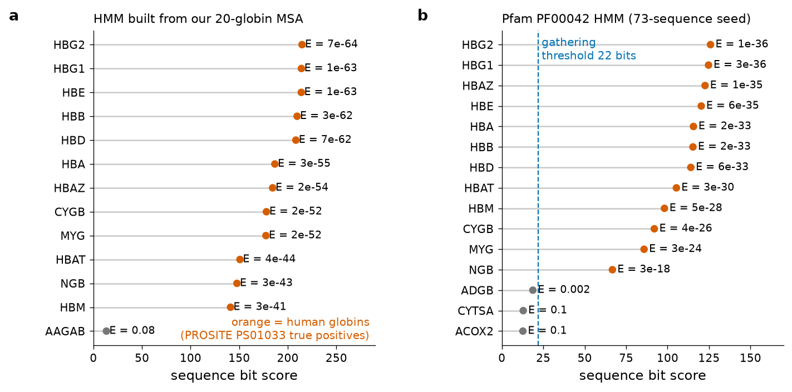
hmmsearch (HMMER 3.4, default reporting threshold E ≤ 10) against the 20,431 reviewed human proteins. Orange: the 12 human proteins annotated as globins by PROSITE PS01033. (a) HMM built from the 20-globin alignment of this unit (148 match states). (b) Pfam PF00042.29 HMM (117 match states, built from a 73-sequence seed); the dashed line is its gathering threshold (GA = 22 bits). Computed for this unit.The contrast with the 15-column PSSM is striking. Both HMMs find all twelve human globins, including neuroglobin, cytoglobin and the minor haemoglobins θ1 and μ, with E-values between 10−64 and 10−18, while the best unrelated protein reaches only 13 bits (E = 0.08) with our model. The difference comes from using the whole domain with position-specific gap penalties, and from HMMER's sequence weighting. Three further points of interpretation:
- Bit scores are comparable between searches; E-values depend on the database. HMMER computes the E-value from the bit score and the number of sequences searched; the same hit found in a search of the 90,746,521 sequences of pfamseq (the database size recorded in the SM line of the Pfam model) would receive an E-value about 4,400 times larger, because 90,746,521 / 20,431 ≈ 4,400.
- Our model gives higher scores than Pfam's (215 against 126 bits for haemoglobin γ2) because it is longer (148 against 117 positions) and was built from sequences that include the very proteins being searched. A model always scores its own training sequences optimistically; this is why Pfam builds its model from a small, diverse seed and judges it on sequences that were not in the seed.
- Thresholds encode curatorial judgement. The Pfam model reports androglobin (ADGB_HUMAN) at 18.7 bits and E = 0.002 — a significant E-value — but below the 22-bit gathering threshold, so Pfam does not count it as a member. Androglobin is in fact a genuine, chimeric and circularly permuted member of the globin superfamily [38]; its globin domain is split, which lowers the score. The gathering threshold was set to exclude every known false positive; the price is that some divergent true members fall below it.
Key ideas of Section 4.5
- Shannon entropy measures column variability (0 to 4.32 bits); invariant columns mark fold and function — Pro C2, Phe CD1 and His F8 in globins.
- Sequence logos show information content (corrected for sample size) and residue frequencies in one picture.
- Motifs are short functional segments; domains are independently folding units.
- Patterns are regular expressions (PROSITE syntax) with measurable precision and recall; very short rules match most proteins by chance and are only necessary conditions.
- Fingerprints (PRINTS) combine several ungapped motifs; blocks (BLOCKS) are ungapped segments that gave rise to BLOSUM.
- Profiles (PSSMs) give log-odds scores per position, require pseudocounts and weighting, and gain power with length.
- Profile HMMs add insert and delete states with position-specific probabilities; Viterbi gives the alignment, Forward the total probability; bit scores and E-values are interpreted as in BLAST, and curated thresholds (Pfam GA) trade sensitivity for specificity.
Bridge
Profile HMMs reappear in Unit 5: HHpred and HHblits compare HMMs with HMMs to detect very remote structural templates, and AlphaFold starts by searching sequence databases with HMM-based tools to build its input MSA. The companion Topic 1 (Section 7.5) explains how PSI-BLAST builds a PSSM iteratively.
Section 4.6Secondary databases
Curriculum: «Bases de datos secundarias. PROSITE. Estructura de los registros. PRINTS. Estructura de los registros. PFAM. Estructura de los registros.» — Secondary databases. PROSITE: structure of the records. PRINTS: structure of the records. Pfam: structure of the records.
4.6.1 What makes a database "secondary"
In Unit 3 you studied primary databases: GenBank/ENA/DDBJ for nucleotide sequences and UniProtKB for proteins, whose records contain sequences as determined (or translated) together with their annotation. Secondary databases are built from primary data: their entries are not sequences but signatures — patterns, fingerprints, profiles or HMMs — distilled from multiple alignments of protein families, together with documentation of the family and lists of the primary-database entries that match. They answer the question that a primary database cannot: "to which family does this new sequence belong, and which of its residues are likely to be functional?"
Each secondary database is tied to one descriptor of Section 4.5, and therefore inherits its strengths and weaknesses: PROSITE (patterns and generalised profiles), PRINTS (fingerprints), BLOCKS (blocks), Pfam (profile HMMs), and others such as SMART, PANTHER, CDD and SUPERFAMILY. Because no single method is best for all families, the major databases are integrated in InterPro (Section 4.6.5). As of 18 October 2026 the InterPro REST API reports InterPro release 110.0 (3 September 2026), with Pfam 38.2, PROSITE 2026_01 and PRINTS 42.0 among its member databases.
4.6.2 PROSITE and the structure of its records
PROSITE, maintained by the SIB Swiss Institute of Bioinformatics, is the oldest protein-family database [26],[39],[27]. It contains three kinds of entries: patterns (regular expressions, entry type PATTERN), generalised profiles (weight matrices with gap scores, entry type MATRIX) and ProRules (annotation rules attached to profiles). Every pattern or profile entry (accession PSnnnnn) is linked to a documentation entry (PDOCnnnnn) — a short review of the family, its function and the rationale of the signature — and several signatures can share one documentation entry: PS00028 (the C2H2 pattern) and PS50157 (the C2H2 profile) both point to PDOC00028.
The data are distributed as a structured flat file, prosite.dat, in which each line begins with a two-letter line code, in the same style as UniProtKB records (Unit 3). An important change occurred in release 2024_03 (29 May 2024): according to the PROSITE CHANGES notice, the information that is recomputed at every release from the matches in UniProtKB/Swiss-Prot — the numerical results (NR lines), the taxonomic range comment, the Swiss-Prot cross-references (DR lines) and the PDB cross-references (3D lines) — was moved from prosite.dat to a separate file, prosite.aux. Textbooks printed before 2024 show the complete record in one file; today you must read both. Below is the real C2H2 zinc-finger entry, assembled from prosite.dat and prosite.aux of release 2026_03 (DR and 3D lines shortened).
| Code | Content | In PS00028 |
|---|---|---|
| ID | Entry name and type (PATTERN or MATRIX) | ZINC_FINGER_C2H2_1; PATTERN |
| AC | Accession number, stable across releases | PS00028 |
| DT | Dates of creation, last data update (the signature itself) and last information update | Created 01-APR-1990; data updated 01-JUN-1994 |
| DE | Short description | Zinc finger C2H2 type domain signature |
| PA | The pattern (pattern entries only) | C-x(2,4)-C-x(3)-[LIVMFYWC]-x(8)-H-x(3,5)-H. |
| MA | The profile matrix and its parameters (profile entries only) | — (see PS01033 below) |
| PP, RU, PR | Post-processing instructions; rule text; link to the associated ProRule | — (PS01033 has PR PRU00238) |
| NR | Numerical results against UniProtKB/Swiss-Prot: release, totals, true positives, unknown, false positives, false negatives, partial | 13,946 hits in 2,470 sequences; FALSE_POS 318(246); FALSE_NEG 124 |
| CC | Comments: functional sites (/SITE), taxonomic range (/TAXO-RANGE), maximum repeats (/MAX-REPEAT), version, author, skip flag | Sites 1, 3, 7, 9 bind zinc; up to 36 repeats in one protein |
| DR | Swiss-Prot cross-references: accession, entry name and a status letter (T true positive, F false positive, N false negative, P partial, ? unknown) | 2,595 entries (2,210 T, 246 F, 124 N, 14 ?, 1 P) |
| 3D | PDB entries of proteins that contain the motif | 553 PDB identifiers |
| DO | Link to the documentation entry | PDOC00028 |
| // | End of entry |
Two details are often asked in tests. In the NR line, numbers such as /TOTAL=13946(2470) mean "13,946 hits in 2,470 different sequences": a protein with several zinc fingers contributes several hits. In the CC line, /SITE=1,zinc; /SITE=3,zinc; /SITE=7,zinc; /SITE=9,zinc; refers to the 1st, 3rd, 7th and 9th elements of the pattern (the two C and the two H), not to residue numbers.
A profile entry: PS01033, the globin domain
The globin family is not described by a pattern but by a generalised profile, PS01033 (GLOBIN; MATRIX), linked to documentation PDOC00793 and ProRule PRU00238. Its record is long because it contains a full scoring matrix; the beginning and the end are reproduced here.
The MA lines define the profile. /GENERAL_SPEC declares the alphabet and the profile length (146 positions). /DISJOINT specifies that matches may not overlap. /DEFAULT sets default scores, including the deletion (D) and insertion (I) scores and the transition costs between match, insert and delete states (MI, MD, IM, DM). Each /M: line is one match position: SY='H' is its consensus symbol, and M= lists twenty integer scores in the alphabetical order ACDEFGHIKLMNPQRSTVWY; for the first position, His scores +38 and Trp −89. /I: lines override the insertion scores between positions, lower (cheaper) in loops where globins vary in length. The /NORMALIZATION line converts the raw score into a normalised score, N = R1 + R2·raw, which behaves like −log10 of an E-value; /CUT_OFF sets the threshold for a certain match (level 0, raw score 931, normalised 10.0) and for a doubtful one (level −1, 504, normalised 6.5). In ScanProsite, human β-globin matches PS01033 from residue 3 to 147 with a normalised score of 43.983 at level 0 — far above the cut-off. The NR lines show why profiles are preferred for domains: in Swiss-Prot release 2026_03 the profile has 1,198 hits in 1,193 sequences, with no false positives and no false negatives (five partial sequences), and its 3D lines cite 1,267 PDB entries of globins. All 20 sequences of our alignment are listed as true positives in its DR lines.
Try it yourself: ScanProsite
- Open
https://prosite.expasy.org/scanprosite/. Under option 1 ("Submit protein sequences and analyse them against the PROSITE collection"), enterP68871and run the scan with default settings. The result lists the GLOBIN profile PS01033 (positions 3–147) and, when ProRule-derived features are displayed, the predicted iron-binding (haem ligand) histidines. - Repeat with "Include motifs with a high probability of occurrence" ticked: the PKC and CK2 phosphorylation and other short rules now appear — compare with Section 4.5.5.
- Use option 2 ("Submit motifs … against a protein database") with the pattern
C-x(2,4)-C-x(3)-[LIVMFYWC]-x(8)-H-x(3,5)-Hrestricted to Homo sapiens in Swiss-Prot, and compare the number of hits with Figure 7c.
The same scan can be run programmatically; the JSON returned on 18 October 2026 by https://prosite.expasy.org/cgi-bin/prosite/PSScan.cgi?seq=P68871&output=json was:
4.6.3 PRINTS and the structure of fingerprint records
PRINTS, created at the University of Manchester by Terri Attwood and co-workers, is the database of protein fingerprints (Section 4.5.6) [28],[29]. Its records are flat files with two-letter, lower-case line codes. The header identifies and documents the fingerprint: the fingerprint code or name (gc, for example BETAHAEM), the accession (gx, PR00814), the number of motifs that compose it (gn, written as COMPOUND(n)), the dates of creation and update (ga), the title (gt), pointers to related entries in other databases such as PROSITE and InterPro (gp), bibliographic references (gr) and a free-text description of the family and of the structural meaning of the motifs (gd). A summary section then reports the diagnostic performance of the fingerprint after the final iteration of database scanning — how many sequences matched all motifs (the true positives, listed by name), how many matched only some motifs (partial matches) and which sequences were rejected. Finally, for each motif, a motif block gives its code (for example BETAHAEM1), its length, its title and the ungapped aligned sequence segments — both the initial seed segments and the final set after iterative refinement — with the start position of each segment and the interval to the previous motif.
Two practical facts must be known. First, PRINTS is no longer developed: its last release is 42.0, which the InterPro API dates to 14 June 2012; the InterPro team reports that the lead investigators of PRINTS (and of SFLD) retired and that development ceased, and InterPro now provides long-term archival access and integration of the data [40],[41]. The InterPro 2025 report lists 2,106 PRINTS signatures, 92.1 % of them integrated in InterPro entries [42]. Second, the original PRINTS web server at the University of Manchester returned an HTTP 502 error when this unit was prepared, so the record structure above is described from the published documentation and the real data below come from InterPro.
InterPro data for the globin-related fingerprints (retrieved 18 October 2026) are summarised in the table. For human β-globin, BETAHAEM matches five motifs, at residues 30–46, 48–63, 72–89, 94–99 and 128–144, with motif scores (as reported by InterPro) between 63.0 and 94.2.
| Accession | Name | Integrated in | Proteins matched | Motif matches | PDB structures |
|---|---|---|---|---|---|
| PR00612 | ALPHAHAEM | IPR002338 (haemoglobin, α-type) | 4,893 | 23,016 | 503 |
| PR00814 | BETAHAEM | IPR002337 (haemoglobin, β-type) | 4,776 | 22,352 | 499 |
| PR00613 | MYOGLOBIN | IPR002335 | 1,332 | 6,192 | 549 |
The ratio of motif matches to proteins (about 4.7 for both haemoglobin fingerprints) reflects that most members match most, but not necessarily all, motifs of the fingerprint.
4.6.4 Pfam and the structure of its entries
Pfam is the most widely used collection of protein families and domains described by profile HMMs [43],[44],[45]. Each Pfam entry has an accession of the form PFnnnnn with a version suffix (PF00042.29 is version 29 of the globin entry) and a short identifier ("Globin"). An entry is built from four components:
- The seed alignment: a curated, manually checked MSA of a small set of representative members. For the globin domain the seed has 73 sequences.
- The profile HMM, built from the seed with
hmmbuild. - The gathering threshold (GA): the bit-score cut-off, chosen by a curator, above which a sequence is considered a member. Two companion values are recorded: the trusted cut-off (TC), the lowest score of a sequence known to be a member, and the noise cut-off (NC), the highest score of a sequence known not to be one.
- The full alignment: all sequences of the reference sequence database that score above GA, aligned to the HMM with
hmmalign. For the globin domain it contains 20,705 sequences.
The HMM file itself starts with a header that records most of this information. These are the first lines of the real PF00042 model downloaded from InterPro:
LENG is the number of match states (117), NSEQ the number of seed sequences (73), EFFN the effective number of sequences after weighting (6.35); GA, TC and NC are the thresholds (22, 22 and 21.9 bits; the two numbers are the sequence and domain thresholds); BM and SM record the commands used to build the model and to search the reference database (with -Z 90746521, the size of pfamseq used for E-value calculation); and the STATS lines contain the parameters of the score distributions used to compute E-values.
Related families are grouped into clans when there is evidence (structural, HMM–HMM comparisons) that they share a common ancestor. PF00042 belongs to clan CL0090 (Globin), whose ten member families include, besides the classical globin domain, the bacterial truncated haemoglobins (Bac_globin, PF01152), the protoglobins (PF11563) and the phycobilisome proteins (PF00502) — the latter a reminder that the globin fold also binds pigments other than haem. Historically, Pfam distinguished Pfam-A, the curated families described above, from Pfam-B, an automatically generated set of clusters covering sequences not in Pfam-A; Pfam-B was discontinued in 2015 [46], so today "Pfam" means Pfam-A.
Pfam has also changed home. The Pfam website (pfam.xfam.org) was retired: in October 2022 its pages began to redirect to InterPro, a legacy site remained available until summer 2023, and Pfam is now accessible exclusively through the InterPro website, the InterPro REST API and InterProScan [41],[42],[45]. The InterPro release of September 2026 contains Pfam 38.2.
Try it yourself: Pfam metadata through the InterPro API
import requests
r = requests.get("https://www.ebi.ac.uk/interpro/api/entry/pfam/PF00042").json()["metadata"]
print(r["accession"], r["name"]["name"], "| type:", r["type"], "| InterPro:", r["integrated"],
"| clan:", r["set_info"]["accession"], r["set_info"]["name"])
print("seed sequences:", r["entry_annotations"]["alignment:seed"],
"| full alignment:", r["entry_annotations"]["alignment:full"])
print("proteins:", r["counters"]["proteins"], "| structures:", r["counters"]["structures"])In the browser, open https://www.ebi.ac.uk/interpro/entry/pfam/PF00042/ and explore the tabs: Curation (seed and full alignments, HMM logo, thresholds), Protein, Domain architectures (282 combinations of this domain with others), Taxonomy and Structures.
4.6.5 InterPro: the integrator
InterPro, created in 1999 at the EBI [47], integrates thirteen member databases — CATH-Gene3D, CDD, HAMAP, NCBIfam, PANTHER, PIRSF, Pfam, PRINTS, PROSITE patterns, PROSITE profiles, SFLD, SMART and SUPERFAMILY [42]. Curators examine the signatures of the member databases and, when several describe the same biological entity, integrate them into a single InterPro entry (accession IPRnnnnnn) with its own documentation, Gene Ontology terms and type: family, domain, homologous superfamily, repeat or site. InterPro entries can be related hierarchically (parent and child families). The globin domain, IPR000971, integrates Pfam PF00042 and PROSITE PS01033 and is found in 35,483 proteins; the β-type haemoglobin family IPR002337 integrates PRINTS PR00814 and CDD cd08925; and the structural superfamilies IPR009050 and IPR012292 integrate SUPERFAMILY and CATH-Gene3D.
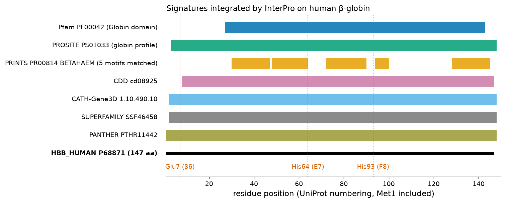
Figure 11 shows the practical value of integration. The member databases do not agree exactly on boundaries — the Pfam domain starts at residue 27, the PROSITE profile at 3 — because each was built with different seeds and methods; and they describe different levels of the classification, from the β-haemoglobin family (PRINTS, CDD) to the globin domain (Pfam, PROSITE) to the globin-like structural superfamily (SUPERFAMILY, Gene3D). InterProScan, the software that runs all member-database searches on a query, is the standard first step in the functional annotation of new genomes.
Clinical connection: domain annotation of variants
The ACMG/AMP guidelines for clinical variant interpretation treat a missense variant located in a critical, well-established functional domain without benign variation as moderate evidence of pathogenicity (criterion PM1) [48]. The domain boundaries used in such assessments typically come from InterPro, Pfam or UniProt. The HbS mutation lies at residue 7 (UniProt numbering), inside the PROSITE profile but outside the Pfam domain boundary (27–142): a reminder that boundaries differ between databases and that the absence of a domain annotation at a position is not evidence of benignity.
Key ideas of Section 4.6
- Secondary databases store family signatures derived from alignments of primary-database sequences.
- PROSITE records use two-letter line codes (ID, AC, DT, DE, PA/MA, NR, CC, DR, 3D, PR, DO, //); since release 2024_03 the NR, DR and 3D lines are distributed in
prosite.aux. - Patterns describe motifs; PROSITE profiles (MA lines with match and insertion scores, normalisation and cut-offs) describe domains such as the globin fold (PS01033).
- PRINTS fingerprints are groups of ungapped motifs; the database stopped at release 42.0 (2012) and is archived and integrated by InterPro.
- A Pfam entry consists of a seed alignment, an HMM, curated thresholds (GA, TC, NC) and a full alignment; families are grouped in clans; Pfam-B was discontinued and the Pfam website has been replaced by InterPro.
- InterPro integrates thirteen member databases into typed entries and provides InterProScan for annotation.
Section 4.7Phylogenetic analysis
Curriculum: «Análisis filogenéticos.» — Phylogenetic analyses.
A phylogenetic tree is a hypothesis about the history of a set of sequences: which shared a common ancestor most recently, and how much change has accumulated along each lineage since. In biomedicine, trees are used to trace epidemics, to identify the source of an infection, to classify pathogens, to infer the function of uncharacterised genes from their relatives, and to date gene duplications such as those that produced the haemoglobin genes. This section introduces the vocabulary, the models that convert observed differences into evolutionary distances, the three families of tree-building methods (distance, parsimony and likelihood-based), the assessment of confidence, the molecular clock, the software and the main health applications.
4.7.1 Terminology: reading a tree
A tree consists of nodes connected by branches (edges). The terminal nodes (leaves or tips) are the sequences analysed — the operational taxonomic units (OTUs). Internal nodes represent inferred common ancestors, which we do not observe. A clade is an ancestor together with all of its descendants; a clade is also called a monophyletic group. The topology is the branching pattern alone, irrespective of branch lengths. In a phylogram the length of each branch is proportional to the amount of change (for example, substitutions per site); in a cladogram only the topology is meaningful; in an ultrametric tree (a chronogram) all tips are equidistant from the root, as expected if change accumulates at a constant rate.
A tree is rooted if one node, the root, is designated as the common ancestor of all sequences, which gives the branches a direction in time. Most methods produce unrooted trees, which show relationships without direction (Figure 12b). There are two usual ways of placing the root: including an outgroup, a sequence known from independent evidence to be outside the group of interest (the bacterial haemoglobin for an animal globin tree), and placing the root on the branch that connects it with the rest (the ingroup); or midpoint rooting, placing the root in the middle of the longest tip-to-tip path, which assumes roughly constant rates.
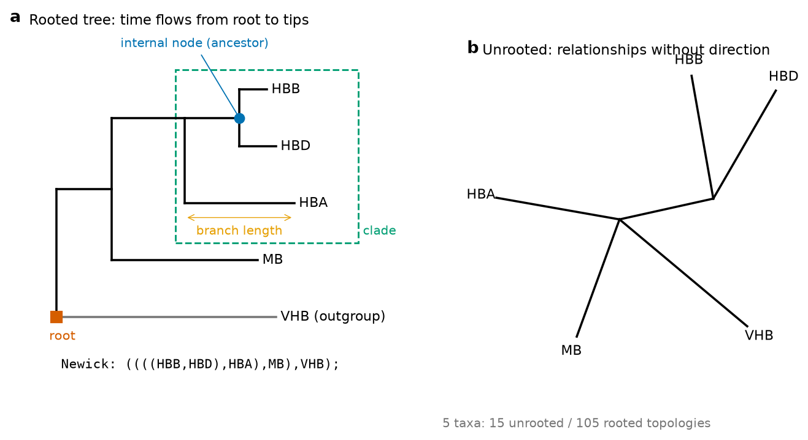
Trees are exchanged in Newick format, a nested-parenthesis notation in which each pair of parentheses is a clade, commas separate sister groups, a colon introduces a branch length, a label after a closing parenthesis can store a support value (IQ-TREE writes, for example, (HBB_human:0.019,HBD_human:0.057)96:0.070), and a semicolon ends the tree. The neighbour-joining tree of the five human β-like genes computed in Section 4.7.5 is, in Newick, ((HBB:0.0365,HBD:0.0395):0.1367,HBE1:0.0757,(HBG1:0.0043,HBG2:0.0007):0.1087); — an unrooted tree written with a basal trifurcation. The number of possible trees grows super-exponentially. For n taxa the number of unrooted bifurcating topologies is (2n − 5)!! = 3 × 5 × 7 × … × (2n − 5): 3 for 4 taxa, 15 for 5, 2,027,025 for 10 and about 2.2 × 1020 for 20 taxa (each rooted count equals the unrooted count for n + 1 taxa). Exhaustive evaluation is therefore impossible for all but very small data sets, and tree-building methods are, like MSA methods, mostly heuristic searches.
Pitfall: reading trees "along the tips"
The left-to-right or top-to-bottom order of the tips carries no information: any internal node can be rotated without changing the tree. Relatedness is read from the most recent common ancestor, not from the proximity of names on the page. Similarly, a lineage that is "at the bottom" or has a long branch is not "more primitive"; all living species are equally modern.
4.7.2 Gene trees, species trees and orthology
A tree built from sequences is a gene tree: it describes the history of the sequences, which need not coincide with the species tree that describes the history of the organisms. Three processes make them differ. Gene duplication creates paralogues within a genome, and a gene tree containing paralogues has nodes that are duplications, not speciations. Gene loss and incomplete sampling can then make paralogues look like orthologues. Horizontal gene transfer, frequent in bacteria (and central to the spread of antibiotic resistance, Section 4.7.12), moves genes between unrelated organisms. A further, more subtle process, incomplete lineage sorting, occurs when ancestral polymorphisms persist through rapid successive speciations.
The globins are the textbook example. The α- and β-globin genes arose by a duplication early in vertebrate evolution, about 450 million years ago, and each subsequently duplicated again to give the embryonic, fetal and adult genes of the human α cluster (chromosome 16: ζ, α2, α1, θ1, μ) and β cluster (chromosome 11: ε, Gγ, Aγ, δ, β) [49],[50]. A tree of human and horse globins therefore has a duplication node at its base (α versus β) and speciation nodes inside each subtree (human versus horse). Because the duplication predates the human–horse split, human α-globin is more similar to horse α-globin (88.0 % identity in our alignment) than to human β-globin (43.6 %): orthologues (related by speciation) cluster together, paralogues (related by duplication) separate. This is precisely the logic used by orthology-inference methods, such as the reciprocal-best-hit approach and the tree-based methods mentioned in U4A, to transfer functional annotation between species.
Bridge
U4A (Pairwise alignment and BLAST) introduced homology, orthology and paralogy and the reciprocal-best-hit criterion. Here the same concepts are made explicit by the topology of a tree.
4.7.3 From alignment to evolutionary distance: substitution models
The simplest measure of divergence between two aligned sequences is the p-distance, the proportion of compared sites that differ. It underestimates the true amount of change, because a site may have changed more than once: an A that became G and then C shows one difference for two substitutions; an A that became G and then back to A shows none. As divergence increases, these multiple hits accumulate and the p-distance saturates. Substitution models correct for this by assuming a stochastic process of change and computing the expected number of substitutions per site, d, from the observed p.
The Jukes–Cantor model (JC69) [51] assumes that the four bases are equally frequent and that every base changes to each of the other three at the same rate. Under these assumptions the expected proportion of differences after d substitutions per site is p = ¾ (1 − e−4d/3), which inverts to
The Kimura two-parameter model (K2P) [52] distinguishes transitions (purine ↔ purine, A ↔ G, or pyrimidine ↔ pyrimidine, C ↔ T), which are more frequent for chemical reasons, from transversions (purine ↔ pyrimidine). With P the proportion of sites differing by a transition and Q by a transversion:
For proteins, the simplest correction is the Poisson distance, d = −ln(1 − p), which assumes that all twenty amino acids replace each other at equal rates; with twenty states, the saturation limit is approached more slowly. Realistic models use empirical replacement matrices estimated from large databases — Dayhoff/PAM, JTT [53], WAG [54], LG [55] and the recent Q.PFAM estimated from Pfam alignments [56]. All models can be combined with a gamma distribution of rates across sites (+G) [57], because some sites (like His F8) almost never change while others change rapidly; the shape parameter α of the gamma distribution measures this heterogeneity (small α, strong heterogeneity). For DNA, the hierarchy of models extends from JC69 and K2P through HKY85 to the general time-reversible model (GTR), with free base frequencies and six exchange rates.
Formal detail: deriving the Jukes–Cantor correction
Let each base change to each of the other three with rate α per unit time. The probability that a site has the same base as at time 0 after time t, Psame(t), obeys dPsame/dt = −3α Psame + α (1 − Psame), whose solution with Psame(0) = 1 is Psame(t) = ¼ + ¾ e−4αt. Two sequences separated by time t on each lineage differ by the same process acting for 2t, so p = 1 − Psame(2t) = ¾ (1 − e−8αt). The expected number of substitutions per site along both lineages is d = 2 × 3αt = 6αt; substituting 8αt = 4d/3 gives p = ¾ (1 − e−4d/3), and solving for d gives the formula in the text.
The table applies these formulas to the coding sequences of the five human β-like globin genes, which have the same length (444 nucleotides including the stop codon) and align without gaps.
| Pair | Differences | Transitions | Transversions | p | dJC | dK2P |
|---|---|---|---|---|---|---|
| HBB–HBD | 32 | 21 | 11 | 0.0721 | 0.0758 | 0.0763 |
| HBB–HBG1 | 106 | 49 | 57 | 0.2387 | 0.2874 | 0.2889 |
| HBB–HBG2 | 104 | 48 | 56 | 0.2342 | 0.2808 | 0.2822 |
| HBB–HBE1 | 93 | 45 | 48 | 0.2095 | 0.2456 | 0.2470 |
| HBD–HBG1 | 106 | 52 | 54 | 0.2387 | 0.2874 | 0.2896 |
| HBD–HBG2 | 104 | 51 | 53 | 0.2342 | 0.2808 | 0.2829 |
| HBD–HBE1 | 95 | 48 | 47 | 0.2140 | 0.2519 | 0.2538 |
| HBG1–HBG2 | 2 | 1 | 1 | 0.0045 | 0.0045 | 0.0045 |
| HBG1–HBE1 | 73 | 38 | 35 | 0.1644 | 0.1856 | 0.1867 |
| HBG2–HBE1 | 73 | 37 | 36 | 0.1644 | 0.1856 | 0.1866 |
Three lessons can be read from the numbers. First, for close pairs the corrections are negligible: HBG1 and HBG2, whose reference proteins differ at only two residues — alanine or glycine at position 136 of the mature chain (the origin of the names Aγ and Gγ) and threonine or isoleucine at position 75 — differ at only two of 444 nucleotides (one in each of the two codons responsible), and p, dJC and dK2P are all 0.0045. Second, for more divergent pairs the correction grows: for HBB versus HBG1 the p-distance of 0.239 becomes 0.287 (JC) and 0.289 (K2P), a 20 % increase. Third, the difference between JC and K2P is small here because transitions and transversions are roughly balanced in these genes (for HBB–HBG1, 49 transitions and 57 transversions); K2P matters more for sequences with a strong transition bias, such as mitochondrial DNA. For deeper comparisons the correction dominates (Figure 13): HBB versus myoglobin (MB) coding sequences differ at p = 0.487, which K2P converts into 0.818 substitutions per site. At the protein level, human β-globin differs from the Vitreoscilla haemoglobin at 85 % of the aligned positions, a Poisson distance of 1.89 replacements per site — more than one change at every site on average.
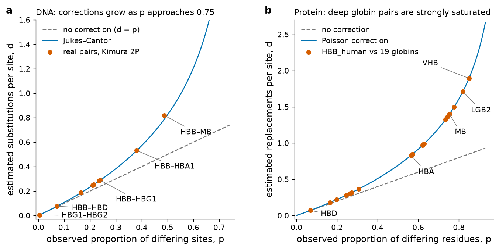
Try it yourself: distances from RefSeq coding sequences
The script downloads the RefSeq mRNAs of HBB and HBD from NCBI, extracts their coding sequences and computes the three distances. Run it in Colab after !pip install biopython.
import math
from Bio import Entrez, SeqIO
# NCBI asks for a contact address: set Entrez.email = "<your institutional e-mail>"
def cds(acc):
rec = SeqIO.read(Entrez.efetch(db="nuccore", id=acc, rettype="gb", retmode="text"), "genbank")
f = [f for f in rec.features if f.type == "CDS"][0]
return str(f.extract(rec.seq))
hbb, hbd = cds("NM_000518"), cds("NM_000519") # both 444 nt, no gaps needed
ts = sum(1 for a, b in zip(hbb, hbd) if a != b and {a, b} in ({"A","G"}, {"C","T"}))
tv = sum(1 for a, b in zip(hbb, hbd) if a != b) - ts
n = len(hbb); P, Q = ts/n, tv/n; p = P + Q
jc = -0.75*math.log(1 - 4*p/3)
k2p = -0.5*math.log(1 - 2*P - Q) - 0.25*math.log(1 - 2*Q)
print(f"n={n} transitions={ts} transversions={tv} p={p:.4f} JC={jc:.4f} K2P={k2p:.4f}")HBD, the δ chain of the minor adult haemoglobin HbA2, is the closest paralogue of HBB. Measuring HbA2 is clinically important: it is raised in β-thalassaemia trait.
Choosing a model
Which model should be used? Too simple a model underestimates distances and can mislead tree reconstruction; too complex a model wastes data on unnecessary parameters. Model selection is done statistically by fitting many models and comparing them with the Akaike or the Bayesian information criterion (AIC, BIC), which reward the likelihood but penalise the number of parameters. IQ-TREE's ModelFinder automates this [58]. For the twenty-globin alignment (201 columns, of which 132 are parsimony-informative and 41 constant), ModelFinder selected Q.PFAM+G4 by BIC (gamma shape α = 2.56), with LG+G4 the second best.
4.7.4 Distance methods I: UPGMA worked by hand
Distance methods first reduce the alignment to a matrix of pairwise distances and then find a tree whose path lengths fit those distances. The oldest is UPGMA (unweighted pair-group method with arithmetic mean), a hierarchical clustering algorithm from numerical taxonomy (Sokal and Michener, 1958). It repeats three steps until one cluster remains: (1) find the two clusters with the smallest distance; (2) join them into a new node placed at half that distance from the tips (height = d/2); (3) compute the distance from the new cluster to every other cluster as the average of all pairwise distances between their members, which equals the size-weighted mean of the two old distances: d(AB, C) = [nA·d(A, C) + nB·d(B, C)] / (nA + nB).
We apply it to the K2P distances of the five human β-like genes, rounded to three decimals:
| HBB | HBD | HBG1 | HBG2 | HBE1 | |
|---|---|---|---|---|---|
| HBB | — | 0.076 | 0.289 | 0.282 | 0.247 |
| HBD | 0.076 | — | 0.290 | 0.283 | 0.254 |
| HBG1 | 0.289 | 0.290 | — | 0.005 | 0.187 |
| HBG2 | 0.282 | 0.283 | 0.005 | — | 0.187 |
| HBE1 | 0.247 | 0.254 | 0.187 | 0.187 | — |
- Step 1. The smallest distance is d(HBG1, HBG2) = 0.005. Join them at height 0.0025. New distances: d(G, HBB) = (0.289 + 0.282)/2 = 0.2855; d(G, HBD) = (0.290 + 0.283)/2 = 0.2865; d(G, HBE1) = (0.187 + 0.187)/2 = 0.187.
- Step 2. The smallest remaining distance is d(HBB, HBD) = 0.076. Join them at height 0.038. New distances: d(BD, HBE1) = (0.247 + 0.254)/2 = 0.2505; d(BD, G) = (0.2855 + 0.2865)/2 = 0.286.
- Step 3. The smallest is d(HBE1, G) = 0.187. Join at height 0.0935. The distance from the new three-member cluster EG to BD is the size-weighted mean: (1 × 0.2505 + 2 × 0.286)/3 = 0.2742.
- Step 4. Join BD and EG at height 0.2742/2 = 0.1371. This is the root.
Branch lengths are differences of heights: HBB and HBD hang 0.038 below their node, which hangs 0.1371 − 0.038 = 0.0991 below the root; HBG1 and HBG2 hang 0.0025 below theirs, which is 0.0935 − 0.0025 = 0.0910 below the HBE1 join, itself 0.1371 − 0.0935 = 0.0436 below the root. In Newick: ((HBB:0.0380,HBD:0.0380):0.0991,(HBE1:0.0935,(HBG1:0.0025,HBG2:0.0025):0.0910):0.0436); (Figure 14a).
UPGMA always produces a rooted, ultrametric tree: all tips are at the same distance from the root. That is correct only if the sequences evolved at the same rate (a molecular clock, Section 4.7.10). If one lineage evolves faster, UPGMA can join the wrong pair, because a long branch increases distances to everybody. For this reason UPGMA is used today mainly to build guide trees and in some clustering applications, not as a phylogenetic method.
Pitfall: check what your software calls "UPGMA"
Biopython 1.88's DistanceTreeConstructor().upgma(), applied to this matrix, returned the same topology but a root height of 0.1341 instead of 0.1371. The difference arises at step 3: the function averages the two old distances without weighting by cluster size ((0.2505 + 0.286)/2 = 0.26825), which is the WPGMA rule (weighted pair-group method). The two methods differ only when clusters of unequal size are merged. Always verify a library on a small example you can compute by hand.
4.7.5 Distance methods II: neighbour-joining worked by hand
The neighbour-joining (NJ) method of Saitou and Nei [59] removes the clock assumption. Instead of joining the closest pair, it joins the pair that minimises the total length of the tree, using a corrected criterion that discounts taxa which are far from everyone because their own branch is long. At each step, with n current nodes:
Applying it to the same matrix:
- n = 5. Row sums: r(HBB) = 0.076 + 0.289 + 0.282 + 0.247 = 0.894; r(HBD) = 0.903; r(HBG1) = 0.771; r(HBG2) = 0.757; r(HBE1) = 0.875. The Q values include Q(HBB, HBD) = 3 × 0.076 − 0.894 − 0.903 = −1.569, Q(HBG1, HBG2) = 3 × 0.005 − 0.771 − 0.757 = −1.513, Q(HBG1, HBE1) = −1.085 and Q(HBB, HBE1) = −1.028. The minimum is Q(HBB, HBD): join them into U1. Branch lengths: b(HBB) = 0.038 + (0.894 − 0.903)/6 = 0.0365; b(HBD) = 0.076 − 0.0365 = 0.0395. New distances: d(U1, HBG1) = (0.289 + 0.290 − 0.076)/2 = 0.2515; d(U1, HBG2) = 0.2445; d(U1, HBE1) = 0.2125.
- n = 4. Row sums: r(HBG1) = 0.4435, r(HBG2) = 0.4365, r(HBE1) = 0.5865, r(U1) = 0.7085. Q(HBG1, HBG2) = 2 × 0.005 − 0.4435 − 0.4365 = −0.870 and Q(HBE1, U1) = 2 × 0.2125 − 0.5865 − 0.7085 = −0.870: a tie. With four nodes the two complementary pairs always have equal Q, because both choices define the same unrooted split {HBG1, HBG2 | HBE1, U1}; either can be joined. Joining HBE1 and U1 into U2 gives b(HBE1) = 0.10625 + (0.5865 − 0.7085)/4 = 0.0757 and b(U1) = 0.1367; d(U2, HBG1) = 0.113 and d(U2, HBG2) = 0.1095.
- n = 3. The last join, HBG1 with HBG2, gives b(HBG1) = 0.0043, b(HBG2) = 0.0007 and a final internal branch of 0.1087.
Try it yourself: verify the hand calculation with Biopython
from Bio.Phylo.TreeConstruction import DistanceMatrix, DistanceTreeConstructor
from Bio import Phylo
names = ["HBB", "HBD", "HBG1", "HBG2", "HBE1"]
d = [[0], [0.076, 0], [0.289, 0.290, 0], [0.282, 0.283, 0.005, 0], [0.247, 0.254, 0.187, 0.187, 0]]
tree = DistanceTreeConstructor().nj(DistanceMatrix(names, d))
for clade in tree.find_clades():
if clade.branch_length:
print(f"{(clade.name or 'internal'):9s} {clade.branch_length:.4f}")
Phylo.write(tree, "beta_nj.nwk", "newick"); print(open("beta_nj.nwk").read().strip())The branch lengths agree with the hand calculation to the fourth decimal (0.0757 versus 0.0758 is rounding). Biopython writes the unrooted tree with an arbitrary basal trifurcation.
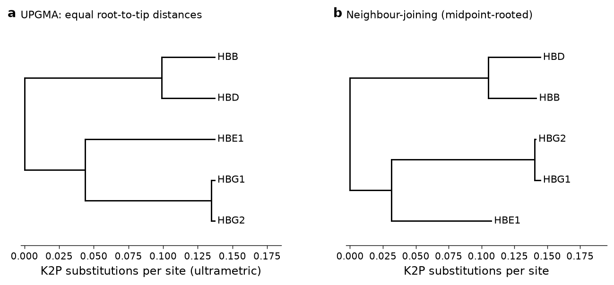
NJ is fast (O(n3)), statistically consistent when the distances are additive, and remains widely used for large data sets and as a starting tree for more elaborate methods. Its main weakness is shared by all distance methods: by reducing each pair of sequences to a single number, it discards the information about which sites changed, and it depends entirely on the quality of the distance correction.
4.7.6 Character-based methods I: maximum parsimony and the Fitch algorithm
Character-based methods work directly on the alignment columns (the characters) instead of on a distance matrix. Maximum parsimony chooses the tree that explains the observed data with the fewest changes, following the principle that the simplest explanation is preferred. It requires two procedures: computing the minimum number of changes needed on a given tree (the tree length), and searching among trees for the shortest.
The first procedure is the Fitch algorithm [60], applied to each site independently. In a post-order traversal (tips first), each tip receives the set containing its observed state. Each internal node receives the intersection of its children's sets if that intersection is not empty; otherwise it receives their union, and one change is counted. The number of unions is the minimum number of changes for that site; the tree length is the sum over all sites.
Consider site 10 of the β-like coding sequences, where HBB and HBD have C and HBG1 and HBE1 have T (Figure 15). On tree T1 = ((HBB, HBD), (HBG1, HBE1)) the node (HBB, HBD) gets {C} ∩ {C} = {C}, the node (HBG1, HBE1) gets {T}, and the root gets {C} ∪ {T} = {C, T} with one change: one change in total. On tree T2 = ((HBB, HBG1), (HBD, HBE1)) both internal nodes need a union ({C, T}, one change each) and the root takes the intersection {C, T}: two changes. The site therefore favours T1.
Try it yourself: the Fitch algorithm in eight lines
def fitch(tree, states):
"""Return (state set, number of changes) for a rooted binary tree of nested tuples."""
if isinstance(tree, str):
return {states[tree]}, 0
(s1, c1), (s2, c2) = fitch(tree[0], states), fitch(tree[1], states)
common = s1 & s2
return (common, c1 + c2) if common else (s1 | s2, c1 + c2 + 1)
site = {"HBB": "C", "HBD": "C", "HBG1": "T", "HBE1": "T"} # CDS position 10
for t in [(("HBB","HBD"),("HBG1","HBE1")), (("HBB","HBG1"),("HBD","HBE1")), (("HBB","HBE1"),("HBD","HBG1"))]:
print(t, "->", fitch(t, site))Not all sites help to choose between trees. For four taxa there are three unrooted topologies, and a site is parsimony-informative only if at least two states each occur in at least two taxa; constant sites and sites where only one taxon differs (singletons) cost the same on every tree. Among the 444 sites of HBB, HBD, HBG1 and HBE1, 140 are variable but only 50 are informative. Of these, 43 have the pattern that supports T1 (HBB = HBD and HBG1 = HBE1), three support T2 and four support T3. The total tree lengths are 165 changes for T1, 205 for T2 and 204 for T3, so T1 is the most parsimonious tree — the same grouping of adult versus early genes found by the distance methods.
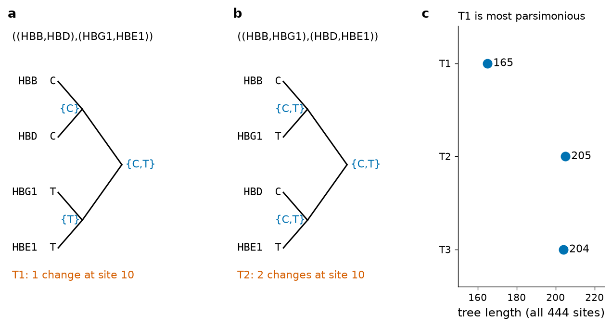
Searching for the shortest tree is the hard part. For a few taxa all trees can be evaluated; for more, branch-and-bound finds the optimum without enumerating every tree, and beyond about 20 taxa heuristic searches are used that rearrange a starting tree by nearest-neighbour interchange (NNI), subtree pruning and regrafting (SPR) or tree bisection and reconnection (TBR). Parsimony has an intuitive appeal and requires no explicit model, but it underestimates change on long branches and can be statistically inconsistent: when two unrelated lineages have long branches, parsimony tends to group them because their convergent changes look like shared derived states ("long-branch attraction") [61]. Model-based methods address this problem.
4.7.7 Character-based methods II: maximum likelihood
Maximum likelihood (ML) [62] asks: given a substitution model, which tree (topology and branch lengths) makes the observed alignment most probable? The likelihood of a tree is L = P(data | tree, model). Assuming that sites evolve independently, L is the product of the likelihoods of the individual sites, and in practice its logarithm is used: ln L = Σsites ln Lsite. The likelihood of one site is computed by summing over all possible states at the internal nodes, weighted by the transition probabilities of the model along each branch; Felsenstein's pruning algorithm does this efficiently by dynamic programming from the tips to the root, in the same post-order spirit as the Fitch algorithm but with probabilities instead of sets.
ML has three important properties. It uses all the information in the alignment and accounts explicitly for multiple substitutions, unequal rates among sites and unequal base or amino-acid frequencies; it is statistically consistent when the model is adequate; and it allows models and trees to be compared by likelihood-ratio tests or information criteria. Its cost is computational: for each candidate topology, branch lengths and model parameters must be optimised numerically, and the topology itself must be searched heuristically. Modern programs (IQ-TREE, RAxML-NG, PhyML) combine fast NNI/SPR searches with stochastic perturbations to escape local optima. For the twenty globins, IQ-TREE found an ML tree with ln L = −4,299.79 under Q.PFAM+G4 (Section 4.7.9).
Formal detail: the likelihood of one site on a three-taxon tree
For a star tree with tips x1, x2, x3, an internal node with unknown state y and branch lengths t1, t2, t3: Lsite = Σy πy Py→x1(t1) Py→x2(t2) Py→x3(t3), where πy is the equilibrium frequency of state y and P(t) = eQt the transition-probability matrix obtained from the rate matrix Q of the model. Under JC69, Psame(t) = ¼ + ¾ e−4t/3 and Pdifferent(t) = ¼ − ¼ e−4t/3, with t in expected substitutions per site.
4.7.8 Character-based methods III: Bayesian inference
Bayesian phylogenetics combines the likelihood with prior probabilities for the tree and model parameters to obtain the posterior probability of each tree given the data, through Bayes' theorem: P(tree | data) = P(data | tree) · P(tree) / P(data). The denominator — the sum over all trees and all parameter values — cannot be computed directly, so the posterior is approximated by Markov chain Monte Carlo (MCMC): a chain starts from a random tree and repeatedly proposes small changes (a branch-length adjustment, a topological rearrangement, a change in a model parameter), accepting each proposal with a probability that depends on the ratio of posterior densities (Metropolis–Hastings rule). After an initial burn-in, the chain visits trees in proportion to their posterior probability, and the frequency with which a clade appears among the sampled trees is its posterior probability. MrBayes popularised the approach [63],[64]; BEAST extends it to dated trees and is the standard for phylodynamics of epidemics.
Bayesian inference naturally expresses uncertainty about every parameter, can include prior knowledge (for example fossil calibrations of node ages) and handles complex models. Its practical difficulties are the need to check convergence (running several independent chains and comparing them, examining effective sample sizes) and the sensitivity of results to priors when data are few. Posterior probabilities are typically higher than bootstrap percentages for the same clade and should not be compared on the same scale.
4.7.9 How reliable is a tree? The bootstrap
Every method returns a tree, even from random data. To ask how strongly the data support each clade, Felsenstein adapted Efron's statistical bootstrap to phylogenetics [65],[66]. A pseudo-replicate alignment is created by sampling columns of the original alignment with replacement until it has the same length — some columns appear twice or more, others not at all. A tree is built from each of, typically, 100 to 1,000 replicates with the same method, and the bootstrap support of a clade is the percentage of replicate trees that contain it. The idea is that the columns are a sample of the possible sites of the gene, and resampling them mimics the variability of the inference if we could sample new sites. Empirical studies suggested that values of 70 % or more often correspond to clades that are correct with high probability [67], but bootstrap values are measures of repeatability, not probabilities that a clade is true. IQ-TREE's ultrafast bootstrap (UFBoot) approximates the procedure much faster and has a different scale: support of 95 % or more is recommended as the threshold for confidence [68],[69].
For the twenty globins, 1,000 bootstrap replicates of a neighbour-joining tree with Poisson distances were computed in Python (3.5 s in total), and an ML tree with 1,000 UFBoot replicates was computed with IQ-TREE 3.1.4 (Figure 16). The comparison is a valuable lesson in what support values mean.
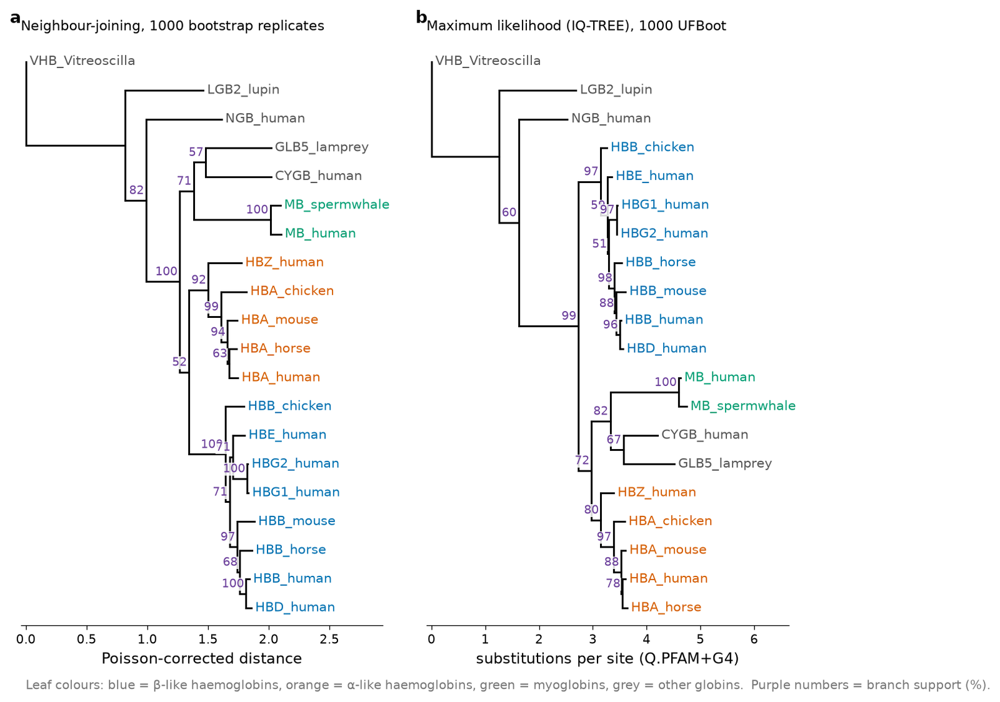
| Clade | NJ bootstrap | ML UFBoot | Interpretation |
|---|---|---|---|
| HBB + HBD | 100 | 96 | Recent duplication within the β cluster |
| HBG1 + HBG2 | 100 | 97 | Very recent duplication (γ genes) |
| Myoglobin (human + sperm whale) | 100 | 100 | Orthologues |
| All eight β-like chains | 100 | 97 | β-globin family |
| Mammalian α chains (human, horse, mouse) | 94 | 88 | Orthologues |
| α chains + HBZ | 92 | 80 | α-globin family |
| Cytoglobin + lamprey globin | 57 | 67 | Weak; agrees with published analyses of lamprey haemoglobins |
| α + β haemoglobins (excluding myoglobin) | 52 | not recovered | Unresolved by these 201 columns |
Clades of closely related sequences are recovered with high support by both methods. The deep nodes are another matter. NJ groups the α and β haemoglobins together with only 52 % bootstrap support, whereas the ML tree groups the α chains with the myoglobin–cytoglobin–lamprey group (72 % UFBoot, well below the 95 % recommended threshold). The accepted history, based on many more data — gene structure, synteny of the globin clusters across vertebrate genomes and large sequence data sets — is that α- and β-haemoglobins are sister groups that diverged from myoglobin earlier [49],[50], and that the haemoglobins of lampreys arose independently from a cytoglobin-like ancestor [70]. Our trees agree with the second conclusion and are inconclusive about the first: with 201 columns of which many are saturated (Figure 13b), these deep splits cannot be resolved. The important lesson is not that one method is "right", but that low support means "unresolved", and that well-supported shallow clades should not lend credibility to poorly supported deep ones.
Within the β-like group a similar situation occurs. The NJ tree groups the embryonic ε chain with the fetal γ chains (71 %), as does the NJ tree of the coding sequences (Figure 14), whereas the ML protein tree weakly groups γ with β/δ (51 %). The coding sequences, which contain more variable sites than the 147-residue proteins, support the early (ε, γ) versus late (δ, β) division accepted for the human β cluster [49].
Pitfall: high support is not the same as correctness
Bootstrap measures sampling variability under the chosen method and model. Systematic errors — a poor alignment, a wrong model, long-branch attraction, paralogues mistaken for orthologues — are reproduced in every replicate and can yield 100 % support for a wrong clade. Support values must be read together with the biological plausibility of the tree, the alignment quality and the results of different methods.
4.7.10 The molecular clock
In 1965 Zuckerkandl and Pauling, comparing haemoglobin sequences of different animals, noticed that the number of amino-acid differences increased roughly in proportion to the time since the species diverged, as estimated from fossils [71]. They proposed the molecular clock: for a given protein, substitutions accumulate at an approximately constant rate. If the rate is known, distances can be converted into times, and the dates of speciations and gene duplications can be estimated. The idea was later given a theoretical basis by the neutral theory, under which the rate of substitution of neutral mutations equals the mutation rate.
A clock can be tested without knowing any date by the relative-rate test: two sequences A and B are compared with an outgroup C that is known to have diverged before A and B separated. If A and B evolve at the same rate, d(A, C) and d(B, C) should be equal within sampling error. In our alignment, the Poisson distance of chicken β-globin to human β-globin is 0.366 and to mouse β-globin 0.426: the mouse lineage appears to have accumulated more replacements. Is the difference (−0.061) significant? A bootstrap over alignment columns (2,000 replicates) gave a standard error of 0.042, so the difference is 1.45 standard errors from zero and does not reject the clock at the usual 5 % level. For the α chains the distances to chicken are 0.351 (human), 0.351 (horse) and 0.341 (mouse) — practically equal.
Today it is known that rates vary between genes (fibrinopeptides change fast, histones extremely slowly), between sites, and between lineages (rodents, with short generation times, tend to evolve faster than primates). Modern dating methods therefore use relaxed clocks, in which each branch may have its own rate drawn from a statistical distribution, calibrated with several fossil or sampling dates; this is the framework of BEAST and of the phylodynamic analyses of epidemics. In pathogens that evolve fast enough to change measurably during an outbreak ("measurably evolving populations"), the sampling dates of the sequences themselves calibrate the clock, which is how the origin of an epidemic can be dated from sequences collected over a few months.
4.7.11 Software for phylogenetics
| Program | Methods | Use |
|---|---|---|
| MEGA [72] | Distance (NJ, UPGMA), parsimony, ML; alignment (ClustalW, MUSCLE); model selection; clock tests and dating | Graphical interface for Windows, macOS and Linux; ideal for teaching and small data sets |
| IQ-TREE [73] | ML with ModelFinder, UFBoot, partitioned and mixture models | Command line and web server; the program used in this unit |
| RAxML-NG [74] | ML with standard and transfer bootstrap | Large data sets, high-performance computing |
| FastTree [75] | Approximately-ML trees, local support values | Very large alignments (hundreds of thousands of sequences) |
| MrBayes [64] | Bayesian MCMC | Posterior probabilities, model averaging |
| BEAST | Bayesian dated trees, relaxed clocks, phylodynamics | Epidemics, divergence dating |
| PHYLIP | Classical package by J. Felsenstein: distance, parsimony, ML, bootstrap (SEQBOOT, CONSENSE) | Historical reference, still useful for teaching individual steps |
| iTOL [76] | Tree visualisation and annotation | Web-based display of Newick trees with colours, labels and data layers |
A typical protein workflow, used in this unit, is: retrieve sequences (UniProt) → align (MAFFT L-INS-i) → inspect and, if necessary, trim unreliable columns → select a model (ModelFinder) → infer an ML tree with branch support (IQ-TREE, UFBoot) → root with an outgroup → visualise and annotate (iTOL) → interpret only well-supported clades.
4.7.12 Applications in health
Genomic surveillance of SARS-CoV-2
During the COVID-19 pandemic, millions of viral genomes were sequenced and shared through public databases. Phylogenetics turned these sequences into actionable information. Nextstrain [77] builds continuously updated, time-calibrated trees of pathogens and displays them with geography and sampling date, so that the introduction of the virus into a country, its local spread and the emergence of new variants can be followed almost in real time. The Pango nomenclature [78] names lineages according to their position in the global phylogeny (for example B.1.1.7, later designated Alpha by the WHO). The decisions taken with these trees — identifying variants of concern, estimating their growth advantage, adapting vaccine composition — rest on the methods of this section: alignment to a reference, a substitution model, an ML or Bayesian tree, a molecular clock calibrated by sampling dates.
HIV transmission and forensic phylogenetics
HIV evolves so fast that the viral populations of two epidemiologically linked people remain more closely related to each other than to viruses from unrelated people in the same community. In the early 1990s, phylogenetic analysis of HIV env sequences from a Florida dentist, several of his patients and local controls showed that the patients' viruses clustered with the dentist's, the first documented case of transmission from a health-care worker during invasive procedures [79]. In 2002, a phylogenetic analysis that took into account the direction of transmission was admitted as evidence in a criminal case in Louisiana [80]. Such analyses require local control sequences, multiple genes and careful interpretation: a tree can show that two viruses are closely related, but transmission may have been indirect, through an unsampled person. Today, phylogenetic cluster detection is used by public-health agencies to target prevention towards growing transmission networks, with strict ethical safeguards for confidentiality.
Spread of antibiotic-resistance genes
Resistance genes often travel on plasmids and transposons between bacterial strains and species (horizontal transfer, Section 4.7.2). Comparing the phylogeny of a resistance gene with that of its host bacteria reveals whether the gene has spread clonally (gene tree mirrors host tree) or by transfer (incongruent trees). A global analysis of the plasmid-borne colistin-resistance gene mcr-1 combined genomes from humans, animals and the environment and traced its emergence and global spread, pointing to an origin associated with livestock, where colistin was widely used [81]. The same approach is used by hospital infection-control teams, who sequence isolates from patients and compare their trees to decide whether a cluster of resistant infections is an outbreak with a common source.
Clinical connection: the molecular epidemiology of an outbreak
When three patients in the same ward develop infections with carbapenem-resistant Klebsiella pneumoniae, whole-genome sequencing of the isolates followed by a phylogenetic analysis answers within days the question that classical typing answered poorly: are the isolates separated by only a handful of single-nucleotide differences (supporting recent transmission within the ward), or by hundreds (independent acquisitions)? The answer decides between closing the ward and searching for an environmental reservoir, or reinforcing admission screening.
Key ideas of Section 4.7
- Trees have tips, internal nodes, branches, clades and (optionally) a root placed with an outgroup or at the midpoint; Newick is the exchange format; the number of topologies grows super-exponentially.
- Gene trees can differ from species trees because of duplication, loss and horizontal transfer; orthologues cluster by species, paralogues by gene.
- p-distances saturate; JC69, K2P and Poisson corrections (and empirical matrices with gamma rates) estimate substitutions per site; models are chosen by AIC/BIC.
- UPGMA assumes a clock and gives ultrametric trees; NJ minimises total tree length with the Q criterion and allows unequal rates.
- Parsimony counts minimum changes (Fitch algorithm; informative sites); ML maximises P(data | tree, model); Bayesian inference samples the posterior by MCMC.
- Bootstrap support measures repeatability; deep globin nodes are unresolved with 201 columns, shallow ones are strongly supported.
- The molecular clock can be tested with relative-rate tests; relaxed clocks and sampling dates allow dating of epidemics.
- Phylogenetics underpins SARS-CoV-2 surveillance, HIV transmission analysis and the tracking of resistance genes.
Running caseβ-globin, the globin family and haemoglobin S
Throughout the course, the human β-globin gene (HBB) and sickle-cell disease have been used to connect each unit to medicine. Unit 3 retrieved the RefSeq transcript NM_000518 and the UniProt entry P68871; U4A compared β-globin with other globins pair by pair and searched databases with BLAST. This unit placed β-globin in the context of its whole family. The results, all obtained from the real data of this document, are collected here.
Running case: what the methods of Unit 4B tell us about β-globin
- Family context (Section 4.4). In the MAFFT L-INS-i alignment of twenty globins, human β-globin is 93.2 % identical to its closest paralogue δ (HBD), 75.5 % to ε (HBE), 72.8 % to γ1 (HBG1), 43.6 % to α (HBA), 24.7 % to myoglobin and 15.0 % to the bacterial haemoglobin of Vitreoscilla. Its orthologues are 83.6 % (horse), 80.3 % (mouse) and 69.4 % (chicken) identical. The alignment places β-globin's Pro36, Phe42 and His92 (mature numbering) in the only three invariant columns of the family, and its distal His63 in a column that is histidine in 19 of 20 sequences.
- Conservation and logo (Section 4.5). The proximal His92 (F8), which binds the haem iron, has the maximum information content in the logo (3.64 bits for n = 20). Glu6, the residue mutated in haemoglobin S, is conserved as glutamate in all eight β-like chains of the alignment but not across the family (entropy 2.25 bits in its column).
- Profiles and HMMs (Section 4.5). In the human proteome, the F-helix PSSM scores β-globin at 41.5 bits (rank 4 of 20,431 proteins). Our 20-globin HMM scores it at 209.6 bits (E = 2.6 × 10−62) and the Pfam HMM at 115.3 bits (E = 2.3 × 10−33).
- Secondary databases (Section 4.6). β-globin is a true positive (DR status T) of the PROSITE globin profile PS01033, matched over residues 3–147 with a normalised score of 43.983. InterPro maps the Pfam Globin domain PF00042 to residues 27–142 and the PRINTS β-haemoglobin fingerprint PR00814 to five motifs, and integrates them into the entries IPR000971 (globin domain) and IPR002337 (haemoglobin, β-type), within clan CL0090.
- Phylogeny (Section 4.7). The coding sequences of the human β-like genes give the tree ((HBB, HBD), (HBE1, (HBG1, HBG2))) with UPGMA, NJ and parsimony alike. HBB and HBD are separated by a K2P distance of 0.076 and HBG1/HBG2 by 0.0045 — the γ duplication is very recent, the δ/β duplication older, and the separation of the early (ε, γ) from the late (δ, β) genes older still. In the protein trees the eight β-like chains form a clade with 100 % (NJ bootstrap) and 97 % (ML UFBoot) support, distinct from the α-like chains.
What the family models do not see. When the sickle-cell sequence (HbS, Glu6Val, the variant rs334) was scored with the same models, the scores barely changed: 207.3 against 209.6 bits with our HMM, 114.8 against 115.3 bits with the Pfam HMM, and an identical F-helix PSSM score (residue 6 lies outside the block). This is not a failure of the methods but a reminder of their purpose: family models answer "is this a globin?", and HbS certainly is one. The disease arises from a property that no single-chain family model represents — a hydrophobic valine on the surface of the β chain that, in the deoxygenated tetramer, fits into a pocket of a neighbouring tetramer and nucleates the polymerisation of haemoglobin into fibres [82],[83]. Interpreting such variants requires the structural view of Unit 5 and the population and clinical data of Unit 2.
Clinical connection: paralogues as therapy
The phylogeny of the β cluster has a direct therapeutic consequence. The fetal γ-globin genes, the closest paralogues of the adult genes after δ, encode chains that form fetal haemoglobin (HbF, α2γ2), which does not polymerise with HbS. Patients who keep high HbF levels in adult life have milder disease, and treatments for sickle-cell disease — from hydroxyurea to recently approved gene-editing therapies that disrupt a repressor of γ-globin expression in the patient's own haematopoietic stem cells — aim to reactivate the γ genes. Understanding which genes are paralogues, how similar their products are and how their expression is switched during development is thus a matter of evolutionary analysis with clinical consequences.
Bridge
In Unit 5 the same story continues in three dimensions: the deoxy-haemoglobin structure 2HHB, the HbS structure 2HBS and the position of Val6 at the contact between tetramers. The helix letters used here (C2, CD1, E7, F8) are the structural nomenclature of the globin fold, which Unit 5 relates to the actual helices.
Practical workshopTaller: from sequences to family signatures and a tree
Duration: 2 hours. Requirements: a PC with a web browser and a Google account (for Colab); Jalview desktop installed or JalviewJS in the browser. Organisation: work in pairs; each pair submits one short report. All expected values given below were obtained with the same data when this unit was prepared; small differences can occur if databases or program versions change.
- Retrieve the data (10 min). In UniProt (
https://www.uniprot.org), retrieve the FASTA sequences of P68871, P69905, P02042, P69891, P02100, P02144, Q9NPG2, Q8WWM9, P02185, P02240 and P04252 (use "ID mapping" or the searchaccession:P68871 OR accession:P69905 …). Expected: 11 sequences of 142 to 190 residues; cytoglobin (Q8WWM9) is the longest. - Align (15 min). At the EMBL-EBI Job Dispatcher (
https://www.ebi.ac.uk/jdispatcher/msa), align the file twice: with Clustal Omega and with MAFFT (choose the L-INS-i strategy if offered, otherwise "auto"). Download both alignments in FASTA format. Expected: alignment lengths of roughly 190–200 columns. - Inspect and compare in Jalview (20 min). Open both alignments. Apply Colour → ClustalX and By Conservation. Find the columns with a Conservation score of "*" and record the β-globin residue in each. Expected: at least the proximal histidine (HBB His93 in UniProt numbering, His92 mature) and Phe43 (Phe42 mature). Note any region where the two alignments differ (typically the N- and C-terminal ends and the region around β-globin residues 50–60).
- Logo (10 min). Copy 20 columns around the proximal histidine from the MAFFT alignment into WebLogo (
https://weblogo.threeplusone.com) and generate a logo. Expected: a full-height H column flanked by tall hydrophobic stacks, similar to Figure 6. - Signatures (15 min). Run ScanProsite with P68871 (Section 4.6.2). Then open
https://www.ebi.ac.uk/interpro/protein/UniProt/P68871/and list the member-database signatures and their coordinates. Expected: PS01033 (3–147), PF00042 (27–142), PR00814 with five motifs, and integration into IPR000971 and IPR002337 (compare Figure 11). - Profile HMM search (15 min). In the HMMER web server (
https://www.ebi.ac.uk/Tools/hmmer/), run hmmsearch with your MAFFT alignment against the reference proteome or Swiss-Prot database restricted to Homo sapiens if that option is available, or in Colab run the commands of Section 4.5.9. Expected: the human globins (haemoglobin chains, myoglobin, neuroglobin, cytoglobin) at the top with E-values far below 10−10, and a sharp drop in score after the last globin. - Tree (20 min). Upload the MAFFT alignment to the W-IQ-TREE web server (
http://iqtree.cibiv.univie.ac.at) with automatic model selection and 1,000 ultrafast bootstrap replicates, or run in Colab!apt-get install -y iqtreefollowed by!iqtree2 -s aln.fa -m MFP -B 1000(the executable may be callediqtreeoriqtree2depending on the package version). Open the.treefilein iTOL (https://itol.embl.de), root it with the Vitreoscilla sequence (P04252) and colour the α-like, β-like and myoglobin sequences. Expected: high support (≥ 95) for the β-like chains and for HBB + HBD; lower support for the relationships among α chains, β chains and myoglobin. - Hand calculation (15 min). Using the K2P matrix of Section 4.7.4, compute by hand the first neighbour-joining step (row sums, the full Q matrix and the first two branch lengths). Expected: Q(HBB, HBD) = −1.569, the minimum; branch lengths 0.0365 and 0.0395.
Deliverable (one page per pair)
- A screenshot of the Jalview alignment (ClustalX colours) with the invariant columns marked, and two sentences on where Clustal Omega and MAFFT disagree.
- The logo, with one sentence interpreting the tallest columns.
- A table of the signatures found for P68871 (database, accession, coordinates).
- The rooted, coloured tree with support values, and three sentences: which clades are well supported, which are not, and whether the result agrees with Section 4.7.9.
- Your hand-computed first NJ step.
Self-assessmentQuestions with worked answers
Try to answer each question in writing before opening the answer. Questions 1–9 are conceptual, 10–18 numerical and 19–26 applied or interpretive.
1. What does a column of a multiple sequence alignment claim, and why is an MSA more than a collection of pairwise alignments?
A column claims positional homology: all residues in it descend from one residue of the common ancestor. An MSA makes these claims consistently for all sequences at once (if Ai is aligned with Bj and Bj with Ck, then Ai is aligned with Ck), which independent pairwise alignments do not guarantee, and it uses the intermediate sequences to align divergent pairs more accurately than their own pairwise alignment would.
2. Why is exact multiple alignment by dynamic programming impractical, and what does the Carrillo–Lipman bound achieve?
The N-dimensional lattice has about LN cells and each needs 2N − 1 predecessor evaluations, so time is O(LN·2N) and memory O(LN); the SP problem is NP-hard. The Carrillo–Lipman bound uses a heuristic alignment score U and the optimal pairwise scores to show that each induced pairwise alignment of the optimum must lie within a band of each 2-D projection; cells outside the band are skipped. It makes exact alignment feasible for a handful of sequences, not for typical data sets.
3. Explain "once a gap, always a gap". What problem does it create, and which strategies address it?
In progressive alignment the gaps placed when two sequences or groups are aligned are frozen for the rest of the procedure. It makes the method fast and stable but prevents early errors from being corrected. Iterative refinement (PRRP, MUSCLE, MAFFT FFT-NS-i) re-partitions and re-aligns groups; consistency methods (T-Coffee, L-INS-i) use information from third sequences before aligning; probabilistic methods (ProbCons, MUSCLE 5) use posterior probabilities summed over all alignments.
4. How does Clustal Omega differ from ClustalW?
ClustalW computes all pairwise alignments to build an NJ guide tree and aligns profiles with substitution matrices plus heuristics (weights, matrix switching, position-specific gap penalties). Clustal Omega computes the guide tree with mBed (k-tuple distances to seed sequences, O(N log N)), converts profiles into hidden Markov models and aligns them HMM-to-HMM with HHalign. It is more accurate on divergent families and scales to hundreds of thousands of sequences.
5. Distinguish a motif from a domain and give a globin example of each.
A motif is a short conserved segment (about 5–30 residues) tied to a function but not folding by itself, such as the proximal-histidine region of the F helix. A domain is an independently folding unit of about 50–300 residues, such as the whole globin fold (eight helices, about 150 residues), described by Pfam PF00042 and PROSITE PS01033.
6. Why are profile hidden Markov models more sensitive than PROSITE patterns for detecting distant family members?
A pattern is all-or-nothing and describes a few positions; one unusual residue in a true member gives a false negative. A profile HMM models every position of the domain with probabilities for all twenty residues, has position-specific insertion and deletion probabilities, and sums evidence over the whole length; a member with a few unusual residues still accumulates a high total score. In our searches the HMMs found all twelve human globins with E-values below 10−17.
7. What are pseudocounts and why does a PSSM need them?
Pseudocounts are small artificial counts added to the observed residue counts of each column, usually in proportion to background frequencies or substitution probabilities. Without them, a residue not observed in the alignment has frequency zero and log-odds score −∞, so any new member carrying an unobserved but acceptable residue would be rejected. Their weight should decrease as the number of sequences grows.
8. Which kinds of information did PROSITE move to the file prosite.aux in release 2024_03, and why does it matter for a student?
The information recomputed at each release from matches in Swiss-Prot: the NR (numerical results) lines, the taxonomic-range comment, the DR (Swiss-Prot cross-references with T/F/N/P/? status) and the 3D (PDB) lines. Older textbooks show complete entries in prosite.dat; today these lines must be read from prosite.aux (or the website), otherwise a record appears to lack them.
9. Explain the difference between a gene tree and a species tree using the human α- and β-globins.
A species tree shows the history of organisms; a gene tree that of sequences. Human α- and β-globin are paralogues produced by a duplication about 450 million years ago, older than the human–horse split. In a gene tree of human and horse α and β chains the basal node is the duplication, and each species appears twice; human α is closer to horse α (88.0 % identity) than to human β (43.6 %).
10. Compute the sum-of-pairs score of the column (L, L, I) with BLOSUM62, and of the column (L, −, I) with a linear gap penalty of −8.
BLOSUM62: s(L, L) = 4, s(L, I) = 2. Column (L, L, I): s(L, L) + s(L, I) + s(L, I) = 4 + 2 + 2 = 8. Column (L, −, I): s(L, −) + s(L, I) + s(−, I) = −8 + 2 − 8 = −14.
11. How many predecessor cells does each cell of the lattice have when aligning five sequences exactly, and how many cells are there for five sequences of length 150?
25 − 1 = 31 predecessors. The lattice has about 1505 = 7.59 × 1010 cells, so about 2.35 × 1012 operations, roughly 39 minutes at 109 operations per second (table in Section 4.4.3).
12. A column of 20 sequences contains 10 Leu, 5 Ile and 5 Val. Compute its Shannon entropy and its information content with the small-sample correction.
p = 0.5, 0.25, 0.25. H = −(0.5 log2 0.5 + 2 × 0.25 log2 0.25) = 0.5 + 1 = 1.5 bits. en = 19 / (2 ln 2 × 20) = 0.685 bits. R = 4.32 − (1.5 + 0.685) = 2.14 bits.
13. Write the PROSITE N-glycosylation pattern as a Python regular expression and say which of these peptides match: NGSA, NPTA, NASP.
N-{P}-[ST]-{P} becomes N[^P][ST][^P]. NGSA matches (G is not P, S is allowed, A is not P). NPTA does not (P in position 2). NASP does not (P in position 4).
14. With N = 4 sequences, a column contains Leu in all four. With pseudocount weight β = 2 and background qL = 0.10, qW = 0.012, compute the log-odds scores of Leu and Trp.
f(L) = (4 + 2 × 0.10)/(4 + 2) = 4.2/6 = 0.70; score = log2(0.70/0.10) = log2 7 = 2.81 bits. f(W) = (0 + 2 × 0.012)/6 = 0.004; score = log2(0.004/0.012) = log2(1/3) = −1.58 bits — negative, but finite.
15. Two DNA sequences of 444 sites differ at 106 sites, 49 of them transitions. Compute the p-distance, the Jukes–Cantor distance and the Kimura two-parameter distance.
p = 106/444 = 0.2387. JC: −0.75 ln(1 − 4 × 0.2387/3) = −0.75 ln(0.6817) = 0.287. K2P: P = 49/444 = 0.1104, Q = 57/444 = 0.1284; −0.5 ln(1 − 0.2207 − 0.1284) − 0.25 ln(1 − 0.2568) = −0.5 ln(0.6509) − 0.25 ln(0.7432) = 0.2147 + 0.0742 = 0.289. These are the HBB–HBG1 values of Section 4.7.3.
16. Two proteins differ at 56.4 % of aligned positions. Compute the Poisson distance and explain why it is much larger than p.
d = −ln(1 − 0.564) = −ln(0.436) = 0.830 replacements per site (the human HBB–HBA value). Many sites have changed more than once or reverted; the observed proportion of differences underestimates the number of events, and the correction grows steeply as p increases.
17. Compute the UPGMA distance between the cluster (HBE1, HBG1, HBG2) and the cluster (HBB, HBD), given d(HBE1, BD) = 0.2505 and d(G, BD) = 0.286, where G = (HBG1, HBG2). What would WPGMA give?
UPGMA weights by cluster size: (1 × 0.2505 + 2 × 0.286)/3 = 0.2742, giving a root height of 0.1371. WPGMA averages the two values equally: (0.2505 + 0.286)/2 = 0.26825, root height 0.1341.
18. Apply the Fitch algorithm to a site with states HBB = A, HBD = G, HBG1 = A, HBE1 = G on the trees T1 = ((HBB, HBD), (HBG1, HBE1)) and T2 = ((HBB, HBG1), (HBD, HBE1)).
T1: node (HBB, HBD) = {A, G}, 1 change; node (HBG1, HBE1) = {A, G}, 1 change; root = intersection {A, G}, no change: 2 changes. T2: node (HBB, HBG1) = {A}; node (HBD, HBE1) = {G}; root = union {A, G}, 1 change: 1 change. This site supports T2. It is one of the three informative sites of Section 4.7.6 that favour T2 against the 43 that favour T1.
19. Five alignment programs agree on 92–98 % of residue pairs but only 37–74 % of columns of the globin alignment. Why the difference, and which statistic is more relevant for building a tree?
A column counts as different if a single residue of any of the 20 sequences is placed differently, so TC is a very strict statistic, whereas SPS gives partial credit. Tree inference uses all residues of every column; columns with a few misplaced residues add noise rather than destroying the signal, so SPS reflects the overall impact better, while TC highlights where alignment is uncertain (useful for trimming).
20. The PROSITE pattern PS00005 matches 95.8 % of human proteins, including human β-globin. Is β-globin a protein kinase C substrate?
Not on this evidence. A three-residue pattern [ST]-x-[RK] occurs by chance about once every 64 residues in average protein composition; the number of matches in the human proteome (159,918) is close to that expected by chance (about 178,000). A match is a necessary condition for phosphorylation by PKC, not evidence; experimental data (phosphoproteomics, kinase assays) and context (accessibility, localisation) are required.
21. hmmsearch reports androglobin with E = 0.002 using the Pfam globin HMM, but Pfam does not count it as a member. Explain.
Pfam membership is defined by the gathering threshold (GA = 22 bits for PF00042), set by curators so that no known non-member scores above it. Androglobin scored 18.7 bits — significant by E-value but below GA. It is a genuine but chimeric, circularly permuted globin whose domain is interrupted, which lowers the score. Thresholds trade sensitivity for specificity, and borderline hits require expert examination.
22. Your HMM, built from 20 globins, gives haemoglobin γ2 a score of 214.7 bits, while the Pfam HMM gives 125.9 bits. Which is "better"?
Neither comparison is fair. Our model has more match states (148 versus 117) and was trained on sequences that include the target, so it scores its own training set optimistically. Pfam's model is built from a diverse seed and calibrated on sequences outside it. To compare models one must test them on sequences not used in training, ideally on remote members and known non-members.
23. A colleague reports a clade with 100 % bootstrap support and concludes it must be correct. What would you check?
Bootstrap measures sampling variability only; systematic errors are reproduced in every replicate. Check the alignment (misaligned regions, fragments), the model (rate heterogeneity, composition), the possibility of long-branch attraction (long branches grouped together), whether the sequences are orthologues or paralogues, and whether other methods (ML with a different model, Bayesian inference) recover the same clade.
24. Why does the deep relationship between α-haemoglobins, β-haemoglobins and myoglobin differ between our NJ and ML trees, and what is the accepted view?
The deep nodes rest on few informative, heavily saturated columns (Poisson distances above 1 between α/β and myoglobin), so support is low (52 % NJ; the alternative ML grouping 72 % UFBoot). Different methods then resolve them differently. Larger data — gene structure, synteny of globin clusters and many more sequences — support α and β haemoglobins as sister groups that diverged from myoglobin earlier.
25. In a relative-rate test, d(human β, chicken β) = 0.366 and d(mouse β, chicken β) = 0.426, with a bootstrap standard error of 0.042 for the difference. Does this reject a molecular clock?
The difference is −0.061, i.e. 1.45 standard errors, which is not significant at the 5 % level (|z| < 1.96). The test does not reject equal rates for these two lineages, although the trend agrees with the faster evolution often observed in rodents. A clock should still be tested on more genes before being used for dating.
26. Explain how phylogenetics was used to investigate HIV transmission in the Florida dental case and name one limitation of such evidence.
HIV env sequences from the dentist, infected patients and local HIV-positive controls were aligned and trees were built; several patients' viruses clustered with the dentist's and apart from the controls, supporting transmission from the dentist. A limitation is that a close relationship does not prove direct transmission or its direction: an unsampled intermediate could explain the same tree, so local controls, several genes and careful, ethically managed interpretation are needed.
AppendixGlossary
- Block
- An ungapped, multiply aligned segment corresponding to a conserved region of a protein family; the BLOCKS database provided the data for the BLOSUM matrices.
- Bootstrap support
- Percentage of trees built from pseudo-replicate alignments (columns resampled with replacement) that contain a given clade; a measure of repeatability, not of truth.
- Bit score
- Log2 ratio of the probability of a sequence under a family model and under a null (background) model; independent of database size.
- BoxShade
- Program for shading identical and similar residues of an existing alignment according to a threshold fraction; writes PostScript, RTF, HTML and other formats.
- Carrillo–Lipman bound
- Inequality that restricts the cells of the multidimensional DP lattice through which an optimal sum-of-pairs alignment can pass.
- Clade
- A common ancestor and all of its descendants; a monophyletic group.
- Clan (Pfam)
- A group of Pfam families believed to share a common ancestor, such as CL0090 (Globin).
- Consensus sequence
- Sequence formed by the most frequent residue of each alignment column, usually above a threshold.
- Consistency (alignment)
- Principle by which the alignment of two residues is supported or weakened by their alignments to residues of third sequences (T-Coffee, ProbCons, MAFFT L-INS-i).
- Delete state
- Silent state of a profile HMM that allows a sequence to skip a consensus position.
- Domain
- Independently folding structural and often functional unit of a protein, typically 50–300 residues.
- Dynamic programming (multidimensional)
- Exact algorithm that fills an N-dimensional lattice to find the optimal alignment of N sequences; cost O(LN·2N).
- E-value
- Expected number of hits with a score at least as high obtained by chance in a search of a database of the given size.
- ESPript
- Web server that renders alignments with similarity shading and the secondary structure of a reference PDB structure.
- Fingerprint
- Group of conserved, ungapped motifs that together diagnose a protein family; the descriptor of PRINTS.
- Fitch algorithm
- Algorithm that computes the minimum number of state changes required at one site on a given tree by intersections and unions of state sets.
- Gathering threshold (GA)
- Curated bit-score cut-off above which a sequence is included in a Pfam family.
- Gene tree
- Tree describing the history of a set of genes or sequences, which may differ from the species tree because of duplication, loss or horizontal transfer.
- Guide tree
- Approximate tree used only to fix the order of joins in progressive alignment; not a phylogeny.
- Information content
- log220 minus the (corrected) entropy of a column; the height of a stack in a sequence logo.
- Insert state
- State of a profile HMM that emits residues between consensus positions, usually with background probabilities, and can loop on itself.
- InterPro
- Integrated resource that combines the signatures of thirteen member databases into curated entries (IPR accessions) of type family, domain, homologous superfamily, repeat or site.
- Iterative refinement
- Repeated re-partitioning and re-alignment of an MSA, accepting changes that improve the objective function.
- Jalview
- Open-source alignment editor and analysis workbench for colouring, editing, annotating, building trees from and exporting alignments.
- Jukes–Cantor correction
- Distance correction for DNA assuming equal base frequencies and equal substitution rates: d = −¾ ln(1 − 4p/3).
- Kimura two-parameter model
- DNA model with separate rates for transitions and transversions.
- Long-branch attraction
- Tendency of some methods, especially parsimony, to group long branches because of convergent changes.
- Match state
- State of a profile HMM that emits one residue with position-specific probabilities.
- Maximum likelihood
- Method that chooses the tree and parameters maximising the probability of the data under a substitution model.
- Maximum parsimony
- Method that chooses the tree requiring the fewest character changes.
- MCMC
- Markov chain Monte Carlo; sampling method used in Bayesian phylogenetics to approximate the posterior distribution of trees.
- Molecular clock
- Hypothesis that substitutions accumulate at an approximately constant rate in a gene, allowing distances to be converted into times.
- Motif
- Short conserved sequence segment associated with a function or structural feature.
- Multiple sequence alignment (MSA)
- Arrangement of three or more sequences in which each column represents a hypothesis of positional homology.
- Neighbour-joining
- Distance method that joins at each step the pair minimising Q(i, j) = (n − 2)d(i, j) − ri − rj; does not assume a clock.
- Newick format
- Parenthetical text format for trees, with branch lengths after colons and support values after closing parentheses.
- Orthologues / paralogues
- Homologous genes separated by speciation / by gene duplication.
- Outgroup
- Sequence known to lie outside the group of interest, used to root a tree.
- Pattern (PROSITE)
- Regular expression describing the allowed residues at each position of a motif.
- Pfam
- Database of protein families and domains described by seed alignments, profile HMMs, curated thresholds and full alignments; now accessed through InterPro.
- Poisson distance
- Protein distance correcting for multiple replacements: d = −ln(1 − p).
- Profile
- Position-specific scoring scheme derived from an alignment; includes PSSMs and generalised profiles with position-specific gap scores.
- Profile hidden Markov model
- Probabilistic model of a family with match, insert and delete states and position-specific emission and transition probabilities.
- Progressive alignment
- Heuristic that builds an MSA by joining sequences and profiles in the order of a guide tree.
- PROSITE
- SIB database of patterns, generalised profiles and ProRules with documentation entries (PDOC).
- PRINTS
- Database of protein fingerprints; last release 42.0 (2012), archived and integrated by InterPro.
- Pseudocount
- Artificial count added to observed counts to avoid zero probabilities in profiles.
- PSSM
- Position-specific scoring matrix: log-odds scores for each residue at each position of a block.
- Rule (PROSITE)
- Very short pattern describing a post-translational modification site; also, in the ProRule sense, an annotation rule attached to a profile.
- Sequence logo
- Graphical display of an alignment in which stack height is information content and letter height is residue frequency.
- Shannon entropy
- H = −Σ pa log2 pa; measure of the variability of an alignment column.
- Sum-of-pairs score
- Score of an MSA equal to the sum of the scores of all induced pairwise alignments.
- Topology
- The branching pattern of a tree, independent of branch lengths.
- UPGMA
- Clustering method that joins the closest clusters and averages distances weighted by cluster size, producing ultrametric trees.
- Viterbi algorithm
- Dynamic-programming algorithm that finds the most probable path of a sequence through an HMM (its alignment to the model); the Forward algorithm sums over all paths.
AppendixReferences and further reading
Primary literature cited in the text
All DOIs were verified against the CrossRef API on 18 October 2026.
- Wang L., Jiang T. (1994). On the Complexity of Multiple Sequence Alignment. Journal of Computational Biology 1:337-348. doi:10.1089/cmb.1994.1.337
- Carrillo H., Lipman D. (1988). The Multiple Sequence Alignment Problem in Biology. SIAM Journal on Applied Mathematics 48:1073-1082. doi:10.1137/0148063
- Lipman D.J., Altschul S.F., Kececioglu J.D. (1989). A tool for multiple sequence alignment. Proceedings of the National Academy of Sciences 86:4412-4415. doi:10.1073/pnas.86.12.4412
- Feng D.F., Doolittle R.F. (1987). Progressive sequence alignment as a prerequisite to correct phylogenetic trees. Journal of Molecular Evolution 25:351-360. doi:10.1007/BF02603120
- Hogeweg P., Hesper B. (1984). The alignment of sets of sequences and the construction of phyletic trees: An integrated method. Journal of Molecular Evolution 20:175-186. doi:10.1007/bf02257378
- Higgins D.G., Sharp P.M. (1988). CLUSTAL: a package for performing multiple sequence alignment on a microcomputer. Gene 73:237-244. doi:10.1016/0378-1119(88)90330-7
- Thompson J.D., Higgins D.G., Gibson T.J. (1994). CLUSTAL W: improving the sensitivity of progressive multiple sequence alignment through sequence weighting, position-specific gap penalties and weight matrix choice. Nucleic Acids Research 22:4673-4680. doi:10.1093/nar/22.22.4673
- Larkin M., Blackshields G., Brown N. et al. (2007). Clustal W and Clustal X version 2.0. Bioinformatics 23:2947-2948. doi:10.1093/bioinformatics/btm404
- Gotoh O. (1996). Significant Improvement in Accuracy of Multiple Protein Sequence Alignments by Iterative Refinement as Assessed by Reference to Structural Alignments. Journal of Molecular Biology 264:823-838. doi:10.1006/jmbi.1996.0679
- Edgar R.C. (2004). MUSCLE: multiple sequence alignment with high accuracy and high throughput. Nucleic Acids Research 32:1792-1797. doi:10.1093/nar/gkh340
- Edgar R.C. (2022). Muscle5: High-accuracy alignment ensembles enable unbiased assessments of sequence homology and phylogeny. Nature Communications 13:6968. doi:10.1038/s41467-022-34630-w
- Katoh K., Misawa K., Kuma K., Miyata T. (2002). MAFFT: a novel method for rapid multiple sequence alignment based on fast Fourier transform. Nucleic Acids Research 30:3059-3066. doi:10.1093/nar/gkf436
- Katoh K., Kuma K., Toh H., Miyata T. (2005). MAFFT version 5: improvement in accuracy of multiple sequence alignment. Nucleic Acids Research 33:511-518. doi:10.1093/nar/gki198
- Katoh K., Standley D.M. (2013). MAFFT Multiple Sequence Alignment Software Version 7: Improvements in Performance and Usability. Molecular Biology and Evolution 30:772-780. doi:10.1093/molbev/mst010
- Notredame C., Higgins D.G., Heringa J. (2000). T-coffee: a novel method for fast and accurate multiple sequence alignment. Journal of Molecular Biology 302:205-217. doi:10.1006/jmbi.2000.4042
- Do C.B., Mahabhashyam M.S., Brudno M. et al. (2005). ProbCons: Probabilistic consistency-based multiple sequence alignment. Genome Research 15:330-340. doi:10.1101/gr.2821705
- Sievers F., Wilm A., Dineen D. et al. (2011). Fast, scalable generation of high‐quality protein multiple sequence alignments using Clustal Omega. Molecular Systems Biology 7:MSB201175. doi:10.1038/msb.2011.75
- Sievers F., Higgins D.G. (2018). Clustal Omega for making accurate alignments of many protein sequences. Protein Science 27:135-145. doi:10.1002/pro.3290
- Eddy S.R. (2011). Accelerated Profile HMM Searches. PLoS Computational Biology 7:e1002195. doi:10.1371/journal.pcbi.1002195
- Burmester T., Weich B., Reinhardt S. et al. (2000). A vertebrate globin expressed in the brain. Nature 407:520-523. doi:10.1038/35035093
- Thompson J.D., Plewniak F., Poch O. (1999). A comprehensive comparison of multiple sequence alignment programs. Nucleic Acids Research 27:2682-2690. doi:10.1093/nar/27.13.2682
- Waterhouse A.M., Procter J.B., Martin D.M.A. et al. (2009). Jalview Version 2—a multiple sequence alignment editor and analysis workbench. Bioinformatics 25:1189-1191. doi:10.1093/bioinformatics/btp033
- Robert X., Gouet P. (2014). Deciphering key features in protein structures with the new ENDscript server. Nucleic Acids Research 42:W320-W324. doi:10.1093/nar/gku316
- Schneider T.D., Stephens R. (1990). Sequence logos: a new way to display consensus sequences. Nucleic Acids Research 18:6097-6100. doi:10.1093/nar/18.20.6097
- Crooks G.E., Hon G., Chandonia J.M. et al. (2004). WebLogo: a sequence logo generator. Genome Research 14:1188-1190. doi:10.1101/gr.849004
- Bairoch A. (1991). Prosite: a dictionary of sites and patterns in proteins. Nucleic Acids Research 19:2241-2245. doi:10.1093/nar/19.suppl.2241
- Sigrist C.J.A., de Castro E., Cerutti L. et al. (2012). New and continuing developments at PROSITE. Nucleic Acids Research 41:D344-D347. doi:10.1093/nar/gks1067
- Attwood T., Beck M. (1994). PRINTS–a protein motif fingerprint database. Protein Engineering 7:841-848. doi:10.1093/protein/7.7.841
- Attwood T.K., Coletta A., Muirhead G. et al. (2012). The PRINTS database: a fine-grained protein sequence annotation and analysis resource--its status in 2012. Database 2012:bas019. doi:10.1093/database/bas019
- Henikoff S., Henikoff J.G. (1991). Automated assembly of protein blocks for database searching. Nucleic Acids Research 19:6565-6572. doi:10.1093/nar/19.23.6565
- Henikoff S., Henikoff J.G. (1992). Amino acid substitution matrices from protein blocks. Proceedings of the National Academy of Sciences 89:10915-10919. doi:10.1073/pnas.89.22.10915
- Henikoff S., Henikoff J.G. (1994). Position-based sequence weights. Journal of Molecular Biology 243:574-578. doi:10.1016/0022-2836(94)90032-9
- Gribskov M., McLachlan A.D., Eisenberg D. (1987). Profile analysis: detection of distantly related proteins. Proceedings of the National Academy of Sciences 84:4355-4358. doi:10.1073/pnas.84.13.4355
- Altschul S.F., Madden T.L., Schäffer A.A. et al. (1997). Gapped BLAST and PSI-BLAST: a new generation of protein database search programs. Nucleic Acids Research 25:3389-3402. doi:10.1093/nar/25.17.3389
- Krogh A., Brown M., Mian I. et al. (1994). Hidden Markov Models in Computational Biology. Journal of Molecular Biology 235:1501-1531. doi:10.1006/jmbi.1994.1104
- Eddy S.R. (1998). Profile hidden Markov models. Bioinformatics 14:755-763. doi:10.1093/bioinformatics/14.9.755
- Eddy S.R. (2004). What is a hidden Markov model?. Nature Biotechnology 22:1315-1316. doi:10.1038/nbt1004-1315
- Hoogewijs D., Ebner B., Germani F. et al. (2012). Androglobin: A Chimeric Globin in Metazoans That Is Preferentially Expressed in Mammalian Testes. Molecular Biology and Evolution 29:1105-1114. doi:10.1093/molbev/msr246
- Hulo N., Bairoch A., Bulliard V. et al. (2006). The PROSITE database. Nucleic Acids Research 34:D227-D230. doi:10.1093/nar/gkj063
- Blum M., Chang H.Y., Chuguransky S. et al. (2021). The InterPro protein families and domains database: 20 years on. Nucleic Acids Research 49:D344-D354. doi:10.1093/nar/gkaa977
- Paysan-Lafosse T., Blum M., Chuguransky S. et al. (2023). InterPro in 2022. Nucleic Acids Research 51:D418-D427. doi:10.1093/nar/gkac993
- Blum M., Andreeva A., Florentino L.C. et al. (2025). InterPro: the protein sequence classification resource in 2025. Nucleic Acids Research 53:D444-D456. doi:10.1093/nar/gkae1082
- Sonnhammer E.L., Eddy S.R., Durbin R. (1997). Pfam: A comprehensive database of protein domain families based on seed alignments. Proteins: Structure, Function, and Genetics 28:405-420. doi:10.1002/(sici)1097-0134(199707)28:3<405::aid-prot10>3.0.co;2-l
- Mistry J., Chuguransky S., Williams L. et al. (2021). Pfam: The protein families database in 2021. Nucleic Acids Research 49:D412-D419. doi:10.1093/nar/gkaa913
- Paysan-Lafosse T., Andreeva A., Blum M. et al. (2025). The Pfam protein families database: embracing AI/ML. Nucleic Acids Research 53:D523-D534. doi:10.1093/nar/gkae997
- Finn R.D., Coggill P., Eberhardt R.Y. et al. (2016). The Pfam protein families database: towards a more sustainable future. Nucleic Acids Research 44:D279-D285. doi:10.1093/nar/gkv1344
- Apweiler R., Attwood T.K., Bairoch A. et al. (2001). The InterPro database, an integrated documentation resource for protein families, domains and functional sites. Nucleic Acids Research 29:37-40. doi:10.1093/nar/29.1.37
- Richards S., Aziz N., Bale S. et al. (2015). Standards and guidelines for the interpretation of sequence variants: a joint consensus recommendation of the American College of Medical Genetics and Genomics and the Association for Molecular Pathology. Genetics in Medicine 17:405-424. doi:10.1038/gim.2015.30
- Hardison R.C. (2012). Evolution of Hemoglobin and Its Genes. Cold Spring Harbor Perspectives in Medicine 2:a011627. doi:10.1101/cshperspect.a011627
- Storz J.F., Opazo J.C., Hoffmann F.G. (2013). Gene duplication, genome duplication, and the functional diversification of vertebrate globins. Molecular Phylogenetics and Evolution 66:469-478. doi:10.1016/j.ympev.2012.07.013
- Jukes T.H., Cantor C.R. (1969). Evolution of Protein Molecules. In: Munro H.N. (ed.) Mammalian Protein Metabolism, vol. III. Academic Press, pp. 21-132. doi:10.1016/B978-1-4832-3211-9.50009-7
- Kimura M. (1980). A simple method for estimating evolutionary rates of base substitutions through comparative studies of nucleotide sequences. Journal of Molecular Evolution 16:111-120. doi:10.1007/BF01731581
- Jones D.T., Taylor W.R., Thornton J.M. (1992). The rapid generation of mutation data matrices from protein sequences. Bioinformatics 8:275-282. doi:10.1093/bioinformatics/8.3.275
- Whelan S., Goldman N. (2001). A General Empirical Model of Protein Evolution Derived from Multiple Protein Families Using a Maximum-Likelihood Approach. Molecular Biology and Evolution 18:691-699. doi:10.1093/oxfordjournals.molbev.a003851
- Le S.Q., Gascuel O. (2008). An Improved General Amino Acid Replacement Matrix. Molecular Biology and Evolution 25:1307-1320. doi:10.1093/molbev/msn067
- Minh B.Q., Dang C.C., Vinh L.S. et al. (2021). QMaker: Fast and Accurate Method to Estimate Empirical Models of Protein Evolution. Systematic Biology 70:1046-1060. doi:10.1093/sysbio/syab010
- Yang Z. (1994). Maximum likelihood phylogenetic estimation from DNA sequences with variable rates over sites: Approximate methods. Journal of Molecular Evolution 39:306-314. doi:10.1007/bf00160154
- Kalyaanamoorthy S., Minh B.Q., Wong T.K.F. et al. (2017). ModelFinder: fast model selection for accurate phylogenetic estimates. Nature Methods 14:587-589. doi:10.1038/nmeth.4285
- Saitou N., Nei M. (1987). The neighbor-joining method: a new method for reconstructing phylogenetic trees. Molecular Biology and Evolution 4:406-425. doi:10.1093/oxfordjournals.molbev.a040454
- Fitch W.M. (1971). Toward Defining the Course of Evolution: Minimum Change for a Specific Tree Topology. Systematic Biology 20:406-416. doi:10.1093/sysbio/20.4.406
- Felsenstein J. (1978). Cases in which Parsimony or Compatibility Methods Will be Positively Misleading. Systematic Zoology 27:401. doi:10.2307/2412923
- Felsenstein J. (1981). Evolutionary trees from DNA sequences: A maximum likelihood approach. Journal of Molecular Evolution 17:368-376. doi:10.1007/BF01734359
- Huelsenbeck J.P., Ronquist F. (2001). MRBAYES: Bayesian inference of phylogenetic trees. Bioinformatics 17:754-755. doi:10.1093/bioinformatics/17.8.754
- Ronquist F., Teslenko M., van der Mark P. et al. (2012). MrBayes 3.2: Efficient Bayesian Phylogenetic Inference and Model Choice Across a Large Model Space. Systematic Biology 61:539-542. doi:10.1093/sysbio/sys029
- Efron B. (1979). Bootstrap Methods: Another Look at the Jackknife. The Annals of Statistics 7:1-26. doi:10.1214/aos/1176344552
- Felsenstein J. (1985). Confidence limits on phylogenies: an approach using the bootstrap. Evolution 39:783-791. doi:10.1111/j.1558-5646.1985.tb00420.x
- Hillis D.M., Bull J.J. (1993). An Empirical Test of Bootstrapping as a Method for Assessing Confidence in Phylogenetic Analysis. Systematic Biology 42:182-192. doi:10.1093/sysbio/42.2.182
- Minh B.Q., Nguyen M.A.T., von Haeseler A. (2013). Ultrafast Approximation for Phylogenetic Bootstrap. Molecular Biology and Evolution 30:1188-1195. doi:10.1093/molbev/mst024
- Hoang D.T., Chernomor O., von Haeseler A. et al. (2018). UFBoot2: Improving the Ultrafast Bootstrap Approximation. Molecular Biology and Evolution 35:518-522. doi:10.1093/molbev/msx281
- Hoffmann F.G., Opazo J.C., Storz J.F. (2010). Gene cooption and convergent evolution of oxygen transport hemoglobins in jawed and jawless vertebrates. Proceedings of the National Academy of Sciences 107:14274-14279. doi:10.1073/pnas.1006756107
- Zuckerkandl E., Pauling L. (1965). Evolutionary Divergence and Convergence in Proteins. In: Bryson V., Vogel H.J. (eds.) Evolving Genes and Proteins. Academic Press, pp. 97-166. doi:10.1016/B978-1-4832-2734-4.50017-6
- Tamura K., Stecher G., Kumar S. (2021). MEGA11: Molecular Evolutionary Genetics Analysis Version 11. Molecular Biology and Evolution 38:3022-3027. doi:10.1093/molbev/msab120
- Minh B.Q., Schmidt H.A., Chernomor O. et al. (2020). IQ-TREE 2: New Models and Efficient Methods for Phylogenetic Inference in the Genomic Era. Molecular Biology and Evolution 37:1530-1534. doi:10.1093/molbev/msaa015
- Kozlov A.M., Darriba D., Flouri T. et al. (2019). RAxML-NG: a fast, scalable and user-friendly tool for maximum likelihood phylogenetic inference. Bioinformatics 35:4453-4455. doi:10.1093/bioinformatics/btz305
- Price M.N., Dehal P.S., Arkin A.P. (2010). FastTree 2 – Approximately Maximum-Likelihood Trees for Large Alignments. PLoS ONE 5:e9490. doi:10.1371/journal.pone.0009490
- Letunic I., Bork P. (2021). Interactive Tree Of Life (iTOL) v5: an online tool for phylogenetic tree display and annotation. Nucleic Acids Research 49:W293-W296. doi:10.1093/nar/gkab301
- Hadfield J., Megill C., Bell S.M. et al. (2018). Nextstrain: real-time tracking of pathogen evolution. Bioinformatics 34:4121-4123. doi:10.1093/bioinformatics/bty407
- Rambaut A., Holmes E.C., O’Toole Á. et al. (2020). A dynamic nomenclature proposal for SARS-CoV-2 lineages to assist genomic epidemiology. Nature Microbiology 5:1403-1407. doi:10.1038/s41564-020-0770-5
- Ou C.Y., Ciesielski C.A., Myers G. et al. (1992). Molecular Epidemiology of HIV Transmission in a Dental Practice. Science 256:1165-1171. doi:10.1126/science.256.5060.1165
- Metzker M.L., Mindell D.P., Liu X.M. et al. (2002). Molecular evidence of HIV-1 transmission in a criminal case. Proceedings of the National Academy of Sciences 99:14292-14297. doi:10.1073/pnas.222522599
- Wang R., van Dorp L., Shaw L.P. et al. (2018). The global distribution and spread of the mobilized colistin resistance gene mcr-1. Nature Communications 9:1179. doi:10.1038/s41467-018-03205-z
- Pauling L., Itano H.A., Singer S.J. et al. (1949). Sickle Cell Anemia, a Molecular Disease. Science 110:543-548. doi:10.1126/science.110.2865.543
- Ingram V.M. (1957). Gene Mutations in Human Hæmoglobin: the Chemical Difference Between Normal and Sickle Cell Hæmoglobin. Nature 180:326-328. doi:10.1038/180326a0
Textbooks
- Lesk A.M. Introduction to Bioinformatics, 5th ed. Oxford University Press, 2019. Chapters on alignment, databases and phylogenetics.
- Pevsner J. Bioinformatics and Functional Genomics, 3rd ed. Wiley-Blackwell, 2015. Chapters 6 (multiple alignment) and 7 (molecular phylogeny).
- Durbin R., Eddy S.R., Krogh A., Mitchison G. Biological Sequence Analysis: Probabilistic Models of Proteins and Nucleic Acids. Cambridge University Press, 1998. The reference text for profile HMMs.
- Felsenstein J. Inferring Phylogenies. Sinauer Associates, 2004.
- Yang Z. Molecular Evolution: A Statistical Approach. Oxford University Press, 2014.
- Baum D.A., Smith S.D. Tree Thinking: An Introduction to Phylogenetic Biology. Roberts and Company, 2013.
Online resources
- PROSITE and ScanProsite: prosite.expasy.org; data files at ftp.expasy.org/databases/prosite (prosite.dat, prosite.aux, CHANGES).
- InterPro, Pfam and PRINTS data: www.ebi.ac.uk/interpro; REST API documentation at www.ebi.ac.uk/interpro/api.
- EMBL-EBI Job Dispatcher (Clustal Omega, MAFFT, MUSCLE, T-Coffee): www.ebi.ac.uk/jdispatcher.
- Jalview: www.jalview.org (documentation and training material).
- BoxShade: Debian/Ubuntu package
boxshade(authors K. Hofmann and M. D. Baron); ESPript/ENDscript: espript.ibcp.fr. - WebLogo: weblogo.threeplusone.com. HMMER: hmmer.org.
- IQ-TREE: iqtree.github.io; W-IQ-TREE web server; iTOL: itol.embl.de; PHYLIP: phylipweb.github.io/phylip; MEGA: www.megasoftware.net.
- Nextstrain: nextstrain.org.